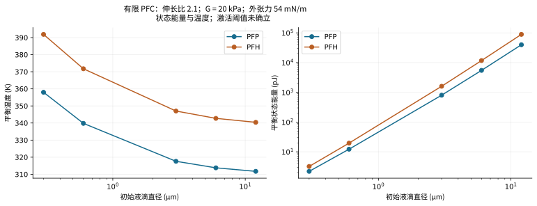
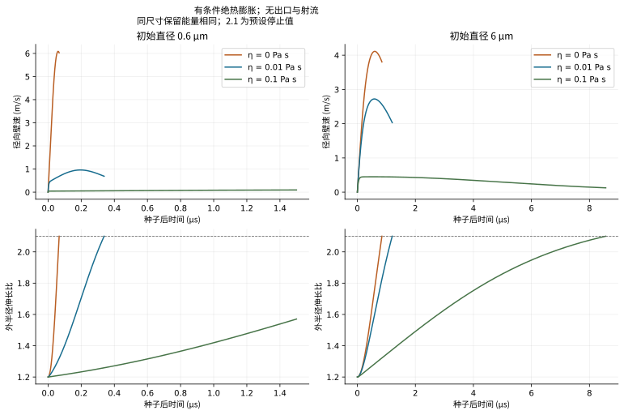
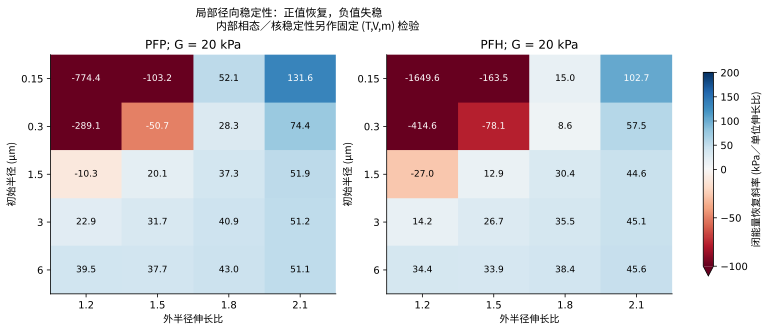
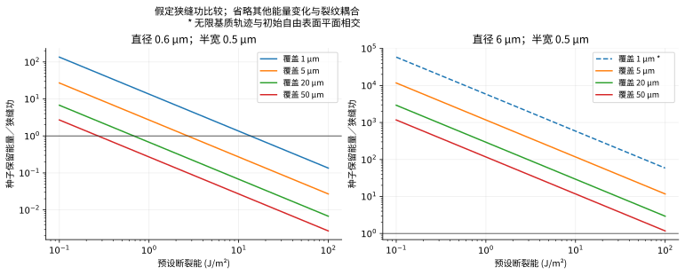

Compare solved equilibrium states
比较已求解平衡状态
Select a state at stretch 2.1 and outer tension 54 mN/m. State energy does not establish an optical activation threshold.
选择伸长比 2.1、外张力 54 mN/m 的状态。状态能量无法确立光学激活阈值。
Finite PFC mass; surviving liquid shell; uniform temperature; curved phase equilibrium; infinite intact gel. Nucleation, fracture and outlets remain outside this control.
有限 PFC 质量、剩余液体壳层、均匀温度、曲面相平衡及无限完整凝胶。成核、断裂与出口仍在该对照范围之外。
PFC droplets in hydrogel: feasibility and parameter comparison
水凝胶中的 PFC 液滴：可行性与参数比较
Result: published experiments demonstrate optical cavitation of PFC droplets inside hydrogel. This study verifies a conditional finite-PFC model. Target laser threshold, channel formation, collapse jets and impact peaks are not established. Missing: the spatial models and measurements listed below.
结果：已发表实验表明，水凝胶中的 PFC 液滴可以发生光致空化。本研究验证一个有条件的有限 PFC 模型。目标样品的激光阈值、通道形成、塌缩射流和冲击峰值尚未确立。缺少：下文列出的空间模型与实测数据。
The earlier ideal-gas control calculates gel deformation and discharge through an existing outlet. Its open-gel peaks are 1.625 m/s outlet speed and 9.143 kPa elastic resistance. Its sealed control emits zero liquid. These results belong to that outlet model. PFC vaporization and fracture require additional equations.
此前的理想气体模型计算凝胶变形及已有出口中的排液。开口凝胶的峰值为出口速度 1.625 m/s、弹性阻力 9.143 kPa。密封对照的排液量为零。这些结果属于该出口模型。PFC 汽化和断裂需要额外方程。
1. Solved models and evidence
1. 已求解模型与证据
Two native COMSOL 6.4 models include finite real-fluid PFC mass, a vapor core, a surviving liquid shell and intact gel. Each retains separate inner and outer interfaces. The stationary model solves four phase, mass and traction equations. The transient uses three differential states and four thermodynamic algebraic unknowns. Native Helmholtz EOS functions are checked against independent CoolProp calculations. The transient starts from a supplied post-nucleation seed. Seed formation remains outside the solved model.
两个原生 COMSOL 6.4 模型包含有限真实流体 PFC 质量、蒸气核、剩余液体壳层和完整凝胶。内外界面分别处理。稳态模型求解四个相态、质量与牵引方程。瞬态模型包含三个微分状态及四个热力学代数未知量。原生 Helmholtz 状态方程与独立 CoolProp 计算比较。瞬态从预设的成核后种子开始。种子形成仍在已求解模型范围之外。
| Question问题 | Current evidence现有证据 | Status状态 |
|---|---|---|
| Can a PFC droplet cavitate inside gel?PFC 液滴能否在凝胶内空化？ | Published optical experiments in fibrin, PAAm and gelatin; PFP/PFH/PFO and several micrometre diameters纤维蛋白、PAAm 和明胶中的光学实验；PFP/PFH/PFO 及多种微米直径 | Feasible for published architectures [S1]已发表结构具有可行性 [S1] |
| Does the new finite-PFC control conserve mass and energy?有限 PFC 模型是否守恒质量和能量？ | 60 native stationary cases and six native transients compared with independent roots/integration60 个原生稳态算例和六个原生瞬态与独立求根／积分比较 | Numerically verified数值验证通过 |
| Is a stationary phase root stable?稳态相平衡根是否稳定？ | 132 radial-branch tests plus fixed-(T,V,m) internal phase/core Hessians132 个径向分支检验及固定 (T,V,m) 的内部相态／蒸气核 Hessian 检验 | Constraint-specific local tests completed完成相应约束下的局部检验 |
| What laser fluence activates this specimen?何种激光能流密度激活目标样品？ | Absorption, local heating, sites and activation data unavailable缺少吸收、局部加热、成核位点与激活数据 | Unresolved未解决 |
| Does an intact gel open a fluid-filled path?完整凝胶能否打开充液通道？ | No calibrated damage or path coupling in these controls模型没有标定损伤及通道耦合 | Unresolved未解决 |
| What exterior jet or impact pressure follows?会产生何种外部射流或冲击压力？ | No outlet, directional collapse or compressible sensor model in new controls模型没有出口、定向塌缩或可压缩传感器模型 | Unresolved; emitted exterior mass is exactly zero未解决；外排质量严格为零 |
S1: embedded-droplet experiments establish feasibility in published specimens. Their bubble model includes water vapor and noncondensable gas. These PFC models omit both. Read the complete derivation and source ledger.
S1：嵌入液滴实验确立了已发表样品中的可行性。其气泡模型含水蒸气和不凝气体。当前 PFC 模型省略两者。参阅完整推导和来源台账。
2. Parameters and comparison conditions
2. 参数与比较条件
| Input输入 | Comparison values比较值 | Meaning含义 |
|---|---|---|
| PFC speciesPFC 种类 | PFP; PFH | Gao/CoolProp 8.0.0 real-fluid EOS [S2]Gao/CoolProp 8.0.0 真实流体状态方程 [S2] |
| Initial radius / diameter初始半径／直径 | 0.15, 0.3, 1.5, 3, 6 µm / 0.3, 0.6, 3, 6, 12 µm | Initial LIQUID size, not initial gas size初始液态尺寸；气体种子尺寸另行定义 |
| Shear modulus剪切模量 | 5, 20, 100 kPa | Stipulated intact neo-Hookean controls; not measured target gel预设完整 neo-Hookean 对照；目标凝胶尚未实测 |
| Effective viscosity有效黏度 | 0, 0.01, 0.1 Pa s | Kelvin-Voigt controls, not target high-rate fitsKelvin–Voigt 对照；目标高速响应尚未拟合 |
| Outer / inner tensions外／内界面张力 | Outer 54 mN/m; PFP inner 9.41, PFH inner 12 mN/m外界面 54 mN/m；PFP 内界面 9.41、PFH 内界面 12 mN/m | Room-temperature reference proxies held constant; PFH outer value is stipulated [S4,S5]采用恒定室温参考值；PFH 外张力为预设值 [S4,S5] |
| Outer-tension sensitivity外张力敏感性 | 5, 18, 54 mN/m for PFP radius 0.3 µmPFP 半径 0.3 µm；5, 18, 54 mN/m | Alternative stipulated interfaces; no coating equivalence asserted替代预设界面；涂层等效性尚未确立 |
| Initial conditions初始条件 | 293.15 K, ambient 100 kPa; liquid initially at ambient + outer Laplace pressure293.15 K；环境 100 kPa；初始液压为环境压力加外界面 Laplace 压力 | Absolute pressures, finite liquid mass绝对压力；有限液态质量 |
| Stationary stretch稳态伸长比 | 1.2, 1.5, 1.8, 2.1 | Equal-size mechanical/phase state comparisons, not laser trajectories比较同伸长比的力学／相态；激光轨迹另行求解 |
| Transient seed瞬态种子 | Stretch 1.2, zero wall speed, liquid pressure 50 kPa above static host requirement伸长比 1.2；壁速为零；液压高于静态基质要求 50 kPa | Conditional post-nucleation state; retained seed energy calculated有条件的成核后状态；计算保留种子能量 |
| Stopping screens停止条件 | First expansion turning, stretch 2.1, Mach 0.1 or 50 reference time scales首次膨胀转折、伸长比 2.1、Mach 0.1 或 50 个参考时间尺度 | 2.1 is not measured rupture; domain exits are rejected/stopped2.1 是预设条件；越出适用域的分支停止或拒绝 |
| Host and boundaries基质与边界 | Density 1000 kg/m³, sound-speed screen 1500 m/s; effectively infinite undrained host密度 1000 kg/m³；声速筛查 1500 m/s；有效无限、不排水基质 | No external free surface, fracture, outlet, or mass leakage无外部自由表面、断裂、出口或质量泄漏 |
Equal stationary stretch compares equilibrium state energies. Required state energy varies between those cases. The viscosity sweep holds retained seed energy fixed within each size. Optical design comparisons must match local incident fluence and absorption law. Mechanical comparisons must match absorbed energy and geometry. Retained seed energy includes storage and ambient work relative to the all-liquid reference. Preparation is lossless here. Measured absorption must also account for pre-seed conduction, viscosity, acoustics and water/coating heating.
同稳态伸长比比较平衡状态能量。各算例所需的状态能量不同。黏度扫描在同尺寸内固定保留种子能量。光学设计比较须匹配局部入射能流密度与吸收规律。力学比较须匹配吸收能量和几何。保留种子能量包含相对全液态参考的储能与环境功。这里假定制备无损。实测吸收还须计入成核前导热、黏性、声学及水／涂层加热。
3. Size and PFC species
3. 尺寸与 PFC 种类
At stretch 2.1, shear modulus 20 kPa and the same stipulated 54 mN/m outer interface:
条件：伸长比 2.1、剪切模量 20 kPa、预设外界面张力 54 mN/m。
| PFC | Initial diameter (µm)初始直径 (µm) | State temperature (K)状态温度 (K) | Equilibrium state energy平衡状态能量 | Vapor MASS fraction蒸气质量分数 |
|---|---|---|---|---|
| PFP | 0.6 | 339.79 | 12.26 pJ | 20.19% |
| PFH | 0.6 | 371.74 | 19.61 pJ | 21.70% |
| PFP | 6 | 313.78 | 5.476 nJ | 9.22% |
| PFH | 6 | 342.72 | 11.703 nJ | 9.60% |


PFP requires lower state temperature and energy than PFH here. The 0.6 µm droplet has stronger capillary confinement. Its initial Laplace excess is 360 kPa. The 6 µm droplet has 36 kPa. Their elastic-to-capillary ratios at 20 kPa modulus are 0.111 and 1.111. Smaller droplets therefore face stronger curvature effects despite lower total energy. These temperatures describe finite-mass curved equilibrium states. Optical activation temperatures are not established.
这些对照中，PFP 的状态温度和能量低于 PFH。0.6 µm 液滴受到更强的毛细约束。其初始 Laplace 超压为 360 kPa。6 µm 液滴为 36 kPa。在 20 kPa 模量下，两者弹性／毛细比为 0.111 和 1.111。小液滴总能量较低，但曲率效应更强。这些温度描述有限质量的曲面平衡状态。光学激活温度尚未确立。
The liquid shell survives substantial expansion. At outer stretch 2.1, vapor contains about 20.2% of the smaller PFP mass. The larger case has about 9.2%. A pre-existing gas approximation removes this finite inventory constraint. Reproducing these states requires phase-specific sensible and phase energy.
显著膨胀后，液壳仍然存活。外伸长比 2.1 时，小 PFP 算例约 20.2% 的质量为蒸气。大算例约为 9.2%。预存气体近似会移除有限物质量约束。重现这些状态需要各相的显热及相变能量。
4. Gel stiffness and interface chemistry
4. 凝胶刚度与界面化学
PFP equilibria at matched stretch 2.1 and outer tension 54 mN/m:
PFP 平衡条件：同伸长比 2.1、外界面张力 54 mN/m。
| Initial diameter (µm)初始直径 (µm) | Shear modulus (kPa)剪切模量 (kPa) | State temperature (K)状态温度 (K) | State energy状态能量 | Elastic resistance (kPa)弹性阻力 (kPa) |
|---|---|---|---|---|
| 0.6 | 5 | 337.26 | 11.57 pJ | 7.610 |
| 0.6 | 20 | 339.79 | 12.26 pJ | 30.438 |
| 0.6 | 100 | 351.43 | 15.55 pJ | 152.191 |
| 6 | 5 | 308.97 | 4.342 nJ | 7.610 |
| 6 | 20 | 313.78 | 5.476 nJ | 30.438 |
| 6 | 100 | 332.70 | 10.226 nJ | 152.191 |
Higher modulus raises gel resistance and equilibrium state energy. Modulus matters more when capillary confinement is weaker. The 20 kPa, stretch-2.1 state has 30.438 kPa elastic resistance. The earlier outlet model reaches a separate 9.143 kPa peak. Strength and fracture toughness require independent measurements.
模量越高，凝胶阻力和平衡状态能量越大。毛细约束较弱时，模量影响更明显。20 kPa、伸长比 2.1 的状态具有 30.438 kPa 弹性阻力。此前出口模型的峰值为另一状态下的 9.143 kPa。强度与断裂韧性须独立实测。
For 0.6 µm-diameter PFP at 20 kPa modulus and stretch 2.1:
条件：PFP 直径 0.6 µm、模量 20 kPa、伸长比 2.1。
| Stipulated outer tension (mN/m)预设外张力 (mN/m) | State temperature (K)状态温度 (K) | State energy状态能量 |
|---|---|---|
| 5 | 318.78 | 6.70 pJ |
| 18 | 325.42 | 8.39 pJ |
| 54 | 339.79 | 12.26 pJ |
Interface chemistry strongly affects the smaller droplets. Inner liquid/vapor tension sets the core pressure jump. Outer liquid/aqueous tension sets initial compression and gel traction. Use values matching interface, coating, composition and temperature. Shell disappearance requires a new gas/aqueous-gel interface and phase closure.
界面化学显著影响小液滴。内侧液／汽张力控制蒸气核压差。外侧液／水张力控制初始压缩与凝胶牵引。取值须匹配界面、涂层、组分及温度。液壳消失后，需要新的气体／水性凝胶界面规律与相态闭合。
5. Viscosity and radial expansion
5. 黏度与径向膨胀
PFP, 20 kPa shear modulus, the specified seed, and no hydraulic outlet:
条件：PFP、剪切模量 20 kPa、指定种子、无液压出口。
| Initial diameter (µm)初始直径 (µm) | Viscosity (Pa s)黏度 (Pa s) | Retained seed energy保留种子能量 | Peak RADIAL speed (m/s)径向峰速 (m/s) | End time (µs)结束时间 (µs) | Endpoint终止条件 |
|---|---|---|---|---|---|
| 0.6 | 0 | 13.50 pJ | 6.0888 | 0.0669 | stretch 2.1 screen伸长比 2.1 |
| 0.6 | 0.01 | 13.50 pJ | 0.9596 | 0.3384 | stretch 2.1 screen伸长比 2.1 |
| 0.6 | 0.1 | 13.50 pJ | 0.0957 | 1.5000 | time window ends; unfinished growth时间窗口结束；仍在膨胀 |
| 6 | 0 | 5.857 nJ | 4.1132 | 0.8470 | stretch 2.1 screen伸长比 2.1 |
| 6 | 0.01 | 5.857 nJ | 2.7231 | 1.2022 | stretch 2.1 screen伸长比 2.1 |
| 6 | 0.1 | 5.857 nJ | 0.4497 | 8.5620 | stretch 2.1 screen伸长比 2.1 |


At 0.01 Pa s, the 0.6 µm case reaches stretch 2.1 in 0.3384 µs. Its peak radial wall speed is 0.9596 m/s. The 6 µm case reaches it in 1.2022 µs. Its peak is 2.7231 m/s. All six cases emit zero exterior mass. The small, high-viscosity case still grows at its 1.5 µs cutoff. Its maximum radius is not established beyond that window.
黏度 0.01 Pa s 时，0.6 µm 算例在 0.3384 µs 达到伸长比 2.1。其径向壁速峰值为 0.9596 m/s。6 µm 算例在 1.2022 µs 达到该值。其峰值为 2.7231 m/s。全部六个算例的外排质量为零。小尺寸高黏度算例在 1.5 µs 截止时仍在膨胀。窗口之后的最大半径尚未确立。
At 0.01 Pa s, dimensionless viscous coefficients are 3.333 and 0.333. They correspond to the smaller and larger radii. Higher viscosity slows radial growth in these matched-seed cases. An outlet adds another route for energy and fluid motion. Compare radial motion and outlet flow with their own observables.
在 0.01 Pa s 下，无量纲黏性系数为 3.333 和 0.333，分别对应小半径与大半径。匹配种子条件下，黏度增加会减慢径向膨胀。出口提供另一条能量和流体运动路径。径向运动与出口流动须分别比较各自观测量。
6. Equilibrium existence and stability
6. 平衡解与稳定性
All 132 stationary states have finite inventory and positive shell thickness. Phase densities are ordered. Both phase pressure-density slopes are positive. Every state passes the internal core/phase Hessian test at fixed temperature, volume and mass. The minimum bulk-to-capillary curvature ratio is 20.4526. Nucleation accessibility and general shape stability are not established.
全部 132 个稳态具有有限物质量和正液壳厚度。相密度顺序正确。两相的压力－密度斜率均为正。每个状态均通过固定温度、体积与质量的内部蒸气核／相态 Hessian 检验。最小体积／毛细曲率比为 20.4526。成核可达性与一般形状稳定性尚未确立。
36 closed-energy states and 94 fixed-temperature states have non-restoring radial slopes. Thermal constraints change the stability result. Halving the perturbation changes closed-energy slopes by at most 3.205e-05 relatively. No sign changes occur. Test branch stability separately from phase-root convergence.
36 个闭能量状态和 94 个定温状态具有非恢复径向斜率。热约束会改变稳定性结果。扰动减半时，闭能量斜率的最大相对变化为 3.205e-05。符号均未变化。分支稳定性须与相平衡根收敛分开检验。


7. Optical, fracture and depth screens
7. 光学、断裂与深度筛查
Use an illustrative local incident fluence of 20 mJ/cm² (200 J/m²). Projected-disk energies are 56.55 pJ and 5.655 nJ for 0.6 and 6 µm diameters. PFP stretch-2.1 state-energy ratios are 0.217 and 0.968. These are required effective cross-section ratios under lossless energy allocation. Effective absorption cross section divided by geometric area can exceed one. Measured absorption and activation thresholds are not established. Missing: absorber/coating heating, depth attenuation, nucleation sites and preparation losses. S7 uses different size, formulation, temperature and exposure history.
采用示例局部入射能流密度 20 mJ/cm²（200 J/m²）。0.6 和 6 µm 直径的投影圆盘能量为 56.55 pJ 和 5.655 nJ。PFP 在伸长比 2.1 的状态能量比为 0.217 和 0.968。这是假定无损分配时所需的有效截面比。有效吸收截面除以几何面积的比值可以超过一。实测吸收与激活阈值尚未确立。缺少：吸收体／涂层加热、深度衰减、成核位点与制备损失。S7使用不同尺寸、配方、温度及照射历史。
A stipulated thermal diffusivity of 1.4 × 10^-7 m²/s and 5 ns pulse gives Fourier numbers 0.00778 and 0.0000778. Heating remains spatially confined during the pulse. Uniform PFC temperature is not established. Activation requires spatial heat transfer and a nucleation-rate model. Apply equilibrium closure after a seed forms under compatible conditions.
预设热扩散率 1.4 × 10^-7 m²/s 和 5 ns 脉冲得到 Fourier 数 0.00778 与 0.0000778。脉冲期间加热局限于局部空间。PFC 温度均匀性尚未确立。激活阶段需要空间传热与成核速率模型。种子形成后，在相容条件下应用平衡闭合。
The slit-cost sweep uses covers 1/5/20/50 µm, half-widths 0.5/1/5 µm and toughnesses 0.1/1/10/100 J/m². These values define hypothetical cracks. A 20 µm cover, 0.5 µm half-width and 1 J/m² toughness costs 20 pJ. Small and large PFP seed energies are 13.50 pJ and 5.857 nJ. Under retained-seed allocation, the smaller case falls below this cost. Fracture impossibility is not established. Cooling, interface changes, prestress and other reference-energy changes alter available work. Exceeding the cost also leaves initiation and channel connectivity unresolved.
狭缝功扫描采用覆盖厚度 1/5/20/50 µm、半宽 0.5/1/5 µm、韧性 0.1/1/10/100 J/m²。这些值定义假想裂纹。20 µm 覆盖、0.5 µm 半宽及 1 J/m² 韧性的功为 20 pJ。小、大 PFP 种子能量为 13.50 pJ 与 5.857 nJ。分配保留种子能量时，小算例低于该成本。断裂不可能性尚未确立。冷却、界面变化、预应力及其他参考能量变化会改变可用功。超过该成本仍无法确定起裂与通道连通。


Finite depth requires a separate geometry check. Center-to-surface distance equals initial radius plus cover. A 3 µm radius under 1 µm cover encounters the initial surface plane at stretch 1.333. This occurs before the 2.1 screen. The infinite-host trajectory then loses its intact-interior interpretation. The CSV records standoff and this gate for every case. Finite-domain convergence remains necessary for other depths.
有限深度须单独检验几何。中心到表面的距离等于初始半径加覆盖厚度。半径 3 µm、覆盖 1 µm 的液滴在伸长比 1.333 接触初始表面平面。这早于 2.1 的筛查值。此后，无限基质轨迹不再代表完整内部膨胀。CSV 为每个算例记录距离及该门槛。其他深度仍须检验有限域收敛。
8. Models and measurements still required
8. 仍需建立的模型与测量
| Stage阶段 | Model change模型扩展 | Required independent observable所需独立观测量 |
|---|---|---|
| 1. Laser and onset1. 激光与起始 | Spatial absorber/PFC/water/gel heat transfer; normalized optical source; metastable liquid and calibrated heterogeneous nucleation hazard吸收体／PFC／水／凝胶空间传热；归一化光源；亚稳液体与标定异质成核危险率 | Absorbed/local fluence and activation probability over size/fluence吸收／局部能流密度及尺寸／能流密度下的激活概率 |
| 2. Intact expansion2. 完整膨胀 | Finite PFC and aqueous inventories; curved interfaces and phase-transfer heat balance; finite-depth gel dynamics; shell inertia/rate rheology when needed有限 PFC 与水物质量；曲面及相变传热；有限深度凝胶动力学；必要时加入液壳惯性与速率流变 | Radius-time trace, displacement field, temperature/composition evidence半径－时间轨迹、位移场、温度／组分证据 |
| 3. Channel formation3. 通道形成 | Measured rate-dependent strength and fracture energy; cohesive/damage law; actual gap aperture, fluid filling and pressure work实测速率强度和断裂能；黏聚／损伤律；实际缝隙、充液与压力功 | Crack time/path/opening, ejection threshold versus cover裂纹时间／路径／开度、随覆盖厚度变化的排液阈值 |
| 4. Exterior ejection4. 外部排液 | Connected crack/outlet plus supplied liquid and exterior free surface; integrated mass, kinetic-energy and momentum flux连通裂纹／出口、液体供给、外部自由表面；积分质量、动能与动量通量 | Emitted mass, velocity history and impulse外排质量、速度历史、冲量 |
| 5. Collapse and pressure5. 塌缩与压力 | Nonspherical compressible multiphase calculation, actual boundary/receiver and sensor averaging非球形可压缩多相计算；实际边界／接收体和传感器平均 | Resolved jet movies, hydrophone trace, location/bandwidth and impulse分辨射流影像、水听器曲线、位置／带宽与冲量 |
The implementation plan lists boundary conditions, tolerances, calibration and held-out comparisons. Begin with one 6 µm PFP droplet and a defined free surface. Retain a 0.6 µm case to test curvature and viscosity. This sequence supports validation. An optimal size is not established. Measure absorption, high-rate gel properties, toughness, strength and depth. Couple solid damage to an actual fluid-filled path. A prescribed outlet tests discharge after connection exists.
实施计划列出边界条件、容差、标定与留出比较。先采用一个 6 µm PFP 液滴及明确自由表面。保留 0.6 µm 算例检验曲率与黏度。该顺序用于验证。最优尺寸尚未确立。须测量吸收、高速凝胶性能、韧性、强度与深度。固体损伤须耦合实际充液通道。预设出口检验连通后的排液。
9. Verification and files
9. 验证与文件
Maximum native/reference stationary relative difference is 4.516e-09. Maximum normalized transient waveform difference is 2.958e-05. Maximum native normalized energy residual is 4.971e-09. Independent DOP853/Radau and tighter-step calculations agree. Entropy drift is checked separately from the energy equation. Fresh-process reload and refinement evidence is in verification/. The prior independent review corrected seed-energy wording, fracture bounds, depth applicability, branch guards, stability scope and notation.
原生／参考稳态最大相对差为 4.516e-09。瞬态归一化波形最大差为 2.958e-05。原生归一化能量最大残差为 4.971e-09。独立 DOP853/Radau 与更小步长计算一致。熵漂移独立于能量方程检验。新进程重载和细化证据位于 verification/。此前独立审查修正了种子能量表述、断裂上界、深度适用性、分支限制、稳定性范围与符号。
The offline reader includes a computed-state selector. Download the native curved-equilibrium model and post-nucleation model. The package includes Java/Python sources, parameter and native/reference CSVs, LaTeX, the accepted English PDF and verification records. README.md gives reproduction commands.
离线阅读器包含计算状态选择器。可下载原生曲面平衡模型和成核后模型。包中包含 Java/Python 源码、参数与原生／参考 CSV、LaTeX、已接受的英文 PDF 和验证记录。README.md提供复现命令。
Status: the conditional finite-PFC comparison is complete and numerically verified. Target laser-to-fracture-to-jet validation is not established. Missing: specimen-specific spatial models and measured mechanism checks.
状态：有条件的有限 PFC 比较已完成并通过数值验证。目标激光－断裂－射流验证尚未确立。缺少：样品专属空间模型及机制实测检验。
Finite PFC in hydrogel: derivation and validation requirements
水凝胶中的有限 PFC：推导与验证要求
1. Problem, objective and scope
1. 问题、目标与范围
Determine the state energy needed to expand a PFC vapor core inside intact hydrogel. Calculate gel load and energy. Identify the additional conditions for exterior ejection and collapse pressure.
确定完整水凝胶内 PFC 蒸气核膨胀所需的状态能量。计算凝胶载荷与能量。明确外部排液和塌缩压力所需的额外条件。
This conditional study solves finite PFC mass, concentric vapor and liquid phases, real-fluid thermodynamics, separate interfaces, gel elasticity and host viscosity. The transient starts from a supplied post-nucleation seed. Its retained energy is calculated relative to an all-liquid reference. Laser heating and seed formation remain unresolved.
本有条件研究求解有限 PFC 质量、同心气液相、真实流体热力学、独立界面、凝胶弹性和基质黏性。瞬态从预设的成核后种子开始。其保留能量相对全液态参考计算。激光加热与种子形成仍未解决。
Two models are retained. The first solves prescribed-radius curved equilibrium and local stability. The second solves insulated radial expansion from a prescribed seed. It stops at first turning, the declared stretch screen or the time cutoff. Both have zero outlet flow. The effectively infinite, undrained gel has radial inertia. Omitted effects are liquid-shell inertia, thermal gradients, phase-transfer kinetics, damage, water vapor, gas diffusion and acoustic radiation. Inner traction is quasistatic. These assumptions bound every result.
保留两类模型。第一类求解指定半径的曲面平衡与局部稳定性。第二类求解指定种子的绝热径向膨胀。首次转折、预设伸长比或时间截止时停止。两者出口流量均为零。有效无限、不排水凝胶保留径向惯性。省略液壳惯性、温度梯度、相变动力学、损伤、水蒸气、气体扩散及声辐射。内界面牵引为准静态。这些假设限定全部结果。
Use spherical coordinates directed outward from the inclusion center. Both radii are positive. Expansion has positive radial speed. Thermodynamic pressures are absolute. Resistance and pressure differences are signed excesses. The initial liquid has outer capillary traction and ambient loading. At infinity, displacement and speed vanish; stress approaches minus ambient pressure. PFC mass is closed and exterior mass flux is zero. Both phases have uniform temperature and equal chemical potential. This is a post-activation equilibrium approximation. Nanosecond thermal homogenization is not established.
采用从液滴中心向外的球坐标。两种半径均为正。膨胀时径向速度为正。热力学压力为绝对压力。阻力和压差为带符号超压。初始液体受到外界面毛细牵引与环境载荷。无穷远处位移和速度消失，应力趋于负环境压力。PFC 质量封闭，外排质量通量为零。两相温度均匀且化学势相等。这是激活后的平衡近似。纳秒内热均匀化尚未确立。
The all-liquid reference starts at room temperature, prescribed radius and Laplace pressure. The seed starts at stretch 1.2 with zero speed and zero accumulated loss. Its liquid pressure exceeds static host traction by 50 kPa. Include seed storage and ambient work. Preparation is lossless here; pre-seed heat, viscous and acoustic losses are omitted. Gel elasticity remains reversible up to the selected screen. Viscosity heats the host. Stretch 2.1 is a declared stopping screen. Measured failure strain is not established.
全液态参考从室温、指定半径和 Laplace 压力开始。种子的初始伸长比为 1.2，速度为零，累积损耗为零。液压超过静态基质牵引 50 kPa。计入种子储能与环境功。这里假定无损制备；省略成核前热、黏性和声学损失。选定筛查值以内的凝胶弹性可逆。黏性加热基质。伸长比 2.1 是预设停止值。实测破坏应变尚未确立。
Foundations: mass conservation; the first law; Helmholtz EOS S2; continuum interface energy and traction; incompressible neo-Hookean elasticity; Kelvin–Voigt viscosity; spherical inertia S6, S8. The core/shell closure and comparisons are original reduced-model calculations. Physical validation requires activation data, radius histories, damage, exterior mass flux and pressure at a defined sensor.
基础：质量守恒；热力学第一定律；Helmholtz 状态方程 S2；连续介质界面能和牵引；不可压缩 neo-Hookean 弹性；Kelvin–Voigt 黏性；球形惯性 S6, S8。核／壳闭合及比较为原创降阶计算。物理验证需要激活数据、半径历史、损伤、外排质量通量及指定传感器处的压力。
2. Symbol glossary and conventions
2. 符号表与约定
All scalars are real. Pi is the dimensionless circle constant. Superscripts on lengths are ordinary powers; a dot denotes differentiation with time. Subscripts 0, l, v, o, i, el, amb, gel, and host label initial, liquid, vapor, outer, inner, elastic, ambient, gel and effective host quantities. A partial derivative holds the displayed conditioning variable fixed. Integrals use the stated coordinate, area, volume or time measure. Logs and exponentials act on dimensionless arguments. Ordinary arithmetic, inequalities and limits have their usual real meanings.
所有标量为实数。圆周率无量纲。长度上标表示幂；点表示时间导数。下标 0、l、v、o、i、el、amb、gel、host 分别表示初始、液体、蒸气、外、内、弹性、环境、凝胶及有效基质。偏导数保持指定条件变量不变。积分使用注明的坐标、面积、体积或时间测度。对数和指数的自变量无量纲。算术、不等式与极限遵循通常的实数约定。
| Symbol符号 | Definition and domain定义与适用域 | Unit单位 |
|---|---|---|
| Time since supplied seed, nonnegative从预设种子开始计时；非负 | s | |
| Initial liquid-droplet radius; current outer radius; vapor-core radius; radial wall speed; , 初始液滴半径；当前外半径；蒸气核半径；径向壁速；， | m, m, m, m/s | |
| Initial inclusion, current inclusion, vapor-core and liquid-shell volumes初始液滴、当前液滴、蒸气核及液壳体积 | m³ | |
| Fixed PFC mass; liquid and vapor masses; vapor mass fraction固定 PFC 质量；液体与蒸气质量；蒸气质量分数 | kg, kg, kg, dimensionlesskg, kg, kg, 无量纲 | |
| Uniform PFC temperature and initial liquid reference temperature均匀 PFC 温度与初始液态参考温度 | K | |
| Liquid, vapor, initial liquid and effective undrained host densities液相、汽相、初始液相及有效不排水基质密度 | kg/m³ | |
| Absolute liquid, vapor, ambient and initial liquid pressures液体、蒸气、环境及初始液体绝对压力 | Pa | |
| Constant outer liquid/aqueous and inner liquid/gas tensions in the controls对照中的恒定外侧液／水及内侧液／气张力 | N/m | |
| Specific Helmholtz energy, internal energy, entropy and Gibbs energy/chemical potential, each as a function of temperature and density/state比 Helmholtz 能、内能、熵及 Gibbs 能／化学势；均为温度和密度／状态的函数 | J/kg, J/kg, J/(kg K), J/kg | |
| Total PFC entropy; inner-core area; absorbed optical power; dummy timePFC 总熵；蒸气核内界面面积；吸收光功率；积分时间变量 | J/K, m², W, s | |
| Phase-specific internal energies, initial liquid internal energy and phase chemical potentials各相比内能、初始液体比内能及相化学势 | J/kg | |
| Host shear modulus and Kelvin–Voigt viscosity基质剪切模量及 Kelvin–Voigt 黏度 | Pa, Pa s | |
| Reference/current host radial coordinates; radial/circumferential stretches; reference/current radius ratio; radial-volume offset参考／当前基质径向坐标；径向／周向伸长比；参考／当前半径比；径向体积偏移 | m, m, dimensionless, dimensionless, dimensionless, m³m, m, 无量纲, 无量纲, 无量纲, m³ | |
| Elastic Cauchy stresses and incompressibility multiplier弹性 Cauchy 应力与不可压缩约束乘子 | Pa | |
| Elastic resistance, viscous resistance, and static liquid pressure required by host弹性阻力、黏性阻力及基质所需静态液压 | Pa | |
| Host radial velocity and diagonal rates of deformation基质径向速度及对角形变率 | m/s, 1/s, 1/s | |
| PFC internal energy, gel strain energy, interface-energy change, ambient work, radial host kinetic energy and cumulative host lossPFC 内能、凝胶应变能、界面能变化、环境功、径向基质动能及累积基质损耗 | J | |
| Host loss power, retained seed energy relative to all-liquid reference, and normalized energy residual基质损耗功率；相对全液态参考的保留种子能量；归一化能量残差 | W, J, dimensionlessW, J, 无量纲 | |
| Outer-radius stretch; small stretch perturbation; closed-energy/fixed-temperature pressure-restoration derivatives外半径伸长比；小伸长扰动；闭能量／定温压力恢复导数 | dimensionless, dimensionless, Pa per dimensionless stretch, same无量纲, 无量纲, Pa／单位无量纲伸长比, 同前 | |
| Pressure, speed, time and energy normalization scales压力、速度、时间与能量归一化尺度 | Pa, m/s, s, J | |
| Normalized time, radial speed and accumulated loss归一化时间、径向速度与累积损耗 | dimensionless无量纲 | |
| Local optical fluence, effective absorption cross section, normalized pulse shape and absorbed energy局部光能流密度、有效吸收截面、归一化脉冲形状及吸收能量 | J/m², m², 1/s, J | |
| Metastable nucleus pressure driving difference; nucleus radius; nucleation free-energy change; critical radius/barrier; nucleation rate; activation probability亚稳汽核压力驱动差；汽核半径；成核自由能变化；临界半径／势垒；成核速率；激活概率 | Pa, m, J, m, J, 1/(m³ s), dimensionlessPa, m, J, m, J, 1/(m³ s), 无量纲 | |
| Critical fracture energy; energy release rate; potential energy; projected crack area; opening; cohesive traction; peak traction; peak-opening displacement; final separation临界断裂能；能量释放率；势能；投影裂纹面积；开度；黏聚牵引；峰值牵引；峰值开度；最终分离 | J/m², J/m², J, m², m, Pa, Pa, m, m | |
| Cover thickness above initial inclusion, slit half-width and illustrative fracture-work requirement初始液滴上方覆盖厚度、狭缝半宽及示例断裂功 | m, m, J | |
| Fixed energy label in radial stability; generic phase density and pressure径向稳定性中的固定能量标签；一般相密度与压力 | J, kg/m³, Pa | |
| Pore-pressure diffusion time and drainage length孔压扩散时间及排水长度 | s, m | |
| Position vector and liquid spatial domain位置向量及液体空间域 | m, domainm, 域 | |
| Vapor volume and mass coordinates; internal Helmholtz energy; phase pressure-density slopes; volume-scaled slopes; relaxed core curvature蒸气体积与质量坐标；内部 Helmholtz 能；相压力－密度斜率；体积缩放斜率；松弛蒸气核曲率 | m³, kg, J, Pa m³/kg, same, Pa/kg, same, Pa/m³m³, kg, J, Pa m³/kg, 同前, Pa/kg, 同前, Pa/m³ | |
| Center-to-initial-free-surface distance and initial-plane encounter stretch中心到初始自由表面的距离及接触初始平面的伸长比 | m, dimensionlessm, 无量纲 | |
| Sound speed; gel permeability; poroelastic modulus; pore-fluid viscosity; host thermal diffusivity; pulse duration声速；凝胶渗透率；孔弹性模量；孔隙液黏度；基质热扩散率；脉冲时长 | m/s, m², Pa, Pa s, m²/s, s |
Gel modulus, viscosity, optical cross section, cover, cohesive strength and toughness are stipulated. They are unmeasured for the target formulation. The source ledger states the support for interface and EOS inputs.
凝胶模量、黏度、光截面、覆盖厚度、黏聚强度及韧性均为预设值。目标配方尚未实测。来源台账说明界面与状态方程输入的依据。
3. Numbered derivation
3. 分步推导
Step 1 — Define volumes, finite phase inventory and initial reference
步骤 1 — 定义体积、有限相质量与初始参考
Symbols before Eq. (E01): are initial liquid, current outer and vapor-core radii (m), with ; are corresponding volumes (m³); pi is dimensionless. These are geometric identities for concentric spheres.
式 (E01) 前的符号： 为初始液体、当前外侧及蒸气核半径（m），满足 ； 为对应体积（m³）；圆周率无量纲。这些是同心球的几何恒等式。
The last identity subtracts the vapor volume from the whole inclusion. The surviving liquid shell is a separate domain; neither outer volume nor core volume is a PFC mass by itself.
末式从液滴总体积减去蒸气体积。剩余液体壳层是独立区域。体积须乘相密度才能得到质量。
Symbols before Eq. (E02): are fixed total, liquid and vapor PFC masses (kg); are initial liquid and current phase densities (kg/m³); are volumes (m³); is the dimensionless vapor mass fraction. Densities and total mass are strictly positive.
式 (E02) 前的符号： 为固定总 PFC、液相及汽相质量（kg）； 为初始液相及当前相密度（kg/m³）； 为体积（m³）； 为无量纲蒸气质量分数。密度与总质量严格为正。
The first row defines masses from EOS densities. The second imposes closed PFC inventory and divides by its positive initial mass. A root with negative shell volume or a vapor fraction outside the indicated interval is rejected, even if the nonlinear solver reports convergence.
首行用状态方程密度定义质量。次行施加封闭 PFC 质量守恒，并除以正初始质量。负液壳体积或越界蒸气分数的根均被拒绝，即使非线性求解器收敛。
Symbols before Eq. (E03): are initial liquid and ambient absolute pressures (Pa); is constant outer tension (N/m); is initial radius (m); is initial temperature (K); is initial liquid density (kg/m³); denotes the liquid EOS density function. The initial gel is unstretched.
式 (E03) 前的符号： 为初始液体与环境绝对压力（Pa）； 为恒定外张力（N/m）； 为初始半径（m）； 为初始温度（K）； 为初始液体密度（kg/m³）； 为液相状态方程密度函数。初始凝胶未伸长。
The first relation adopts the spherical capillary traction at the initially liquid outer interface. The second evaluates a liquid state at that pressure, rather than using an unrelated gas density. The jump has units N/m divided by m, or Pa, and decreases with increasing radius.
首式采用初始液态外界面的球形毛细牵引。次式在该压力下求液体状态。压差单位为 N/m 除以 m，即 Pa，并随半径增加而下降。
Step 2 — Use a real-fluid EOS and keep both interfaces distinct
步骤 2 — 使用真实流体状态方程并分别处理界面
Symbols before Eq. (E04): is specific Helmholtz energy (J/kg); is temperature (K); is a generic phase density (kg/m³); are pressure (Pa), specific internal energy (J/kg), entropy (J/(kg K)), and chemical potential (J/kg). Partial derivatives are at fixed subscripted variable. These thermodynamic identities are evaluated using the adopted EOS S2.
式 (E04) 前的符号： 为比 Helmholtz 能（J/kg）； 为温度（K）； 为一般相密度（kg/m³）； 分别为压力（Pa）、比内能（J/kg）、比熵（J/(kg K)）及化学势（J/kg）。偏导保持下标变量不变。采用状态方程 S2求这些热力学恒等式。
The first row differentiates the Helmholtz representation at its stated independent variables. The second reconstructs internal and Gibbs energies. Pressure divided by density has unit J/kg, so the Gibbs expression is dimensionally consistent. Both phases use the same energy reference. No constant ideal-gas exponent or separately fitted pressure pulse appears.
首行按指定自变量对 Helmholtz 能求导。次行重建内能与 Gibbs 能。压力除以密度的单位是 J/kg，因此 Gibbs 表达式量纲一致。两相采用相同能量参考。压力由真实流体状态方程计算。
Symbols before Eq. (E05): are vapor and liquid absolute pressures (Pa); are vapor and liquid chemical potentials (J/kg); is constant inner tension (N/m); is positive vapor-core radius (m); is uniform temperature (K). Equal temperature and instantaneous phase equilibrium are adopted constitutive approximations; interfaces are spherical.
式 (E05) 前的符号： 为蒸气与液体绝对压力（Pa）； 为两相化学势（J/kg）； 为恒定内张力（N/m）； 为正蒸气核半径（m）； 为均匀温度（K）。等温与瞬时相平衡为采用的本构近似；界面为球形。
The capillary relation uses the inner liquid/gas interface. Chemical equilibrium equates chemical potential at the different phase pressures; it does not replace either pressure by a flat-interface saturation value. Using 0.072 N/m water/gas tension for every interface would change the problem. A very small core also raises the capillary jump; continuum curvature and constant tension become uncertain at molecular scales.
毛细关系使用内侧液／气界面。化学平衡令不同相压力下的化学势相等。平面饱和压力不能直接替代它们。将全部界面张力设为水／气的 0.072 N/m 会改变问题。小蒸气核提高毛细压差；分子尺度下连续曲率和恒定张力近似变得不确定。
Step 3 — Derive the intact spherical gel resistance
步骤 3 — 推导完整球形凝胶阻力
Symbols before Eq. (E06): are positive reference and current host radial coordinates (m); are current and initial inclusion radii (m); is the volume-offset parameter (m³); are dimensionless radial/circumferential stretches; is the radial derivative. Incompressible spherical motion and are assumed.
式 (E06) 前的符号： 为正参考与当前基质径向坐标（m）； 为当前与初始液滴半径（m）； 为体积偏移参数（m³）； 为无量纲径向／周向伸长比； 为径向导数。假设球形不可压缩运动，且 。
The first row conserves host volume between inner and any outer material sphere. The second collects constants and differentiates with respect to reference radius. Division by positive squared radius yields the third row, which verifies unit volume ratio explicitly.
首行保持内界面与任意外侧材料球间的基质体积。次行合并常量并对参考半径求导。除以正半径平方得到第三行，明确验证体积比为一。
Symbols before Eq. (E07): are elastic radial stress, tangential stress, incompressibility multiplier and positive shear modulus (Pa); are dimensionless stretches from Eq. (E06); is current radius (m); is spatial differentiation. This is the incompressible neo-Hookean constitutive control and elastic radial equilibrium.
式 (E07) 前的符号： 为弹性径向应力、切向应力、不可压缩乘子及正剪切模量（Pa）； 为式 (E06) 的无量纲伸长比； 为当前半径（m）； 表示空间求导。采用不可压缩 neo-Hookean 本构与弹性径向平衡。
The first two expressions declare the host material law. Their subtraction eliminates the unknown multiplier. The last relation is the spherically symmetric divergence of elastic stress, used to obtain the elastic traction component; inertia and viscosity are added separately below.
前两式定义基质材料律。相减消去未知乘子。末式为球对称弹性应力散度，用于计算弹性牵引。惯性与黏性在下文分别加入。
Symbols before Eq. (E08): is elastic wall resistance (Pa); is shear modulus (Pa); are radii (m); is dimensionless; is positive during expansion (m³); denotes definite spatial integration. Upper endpoint infinity means an effectively infinite host. At exactly , resistance follows by continuity.
式 (E08) 前的符号： 为弹性壁阻力（Pa）； 为剪切模量（Pa）； 为半径（m）； 无量纲； 在膨胀时为正（m³）； 表示空间定积分。上限无穷表示有效无限基质。 时取连续极限。
Integrating Eq. (E07) with the far stress condition gives the first row. Eq. (E06) gives the variable transformation and its Jacobian. At the inner boundary the ratio is the initial/current inclusion radius; at infinity it tends to one. Factoring the numerator as the product of one minus the cube and one plus the cube permits cancellation for every finite radius in expansion; the endpoint integral has a removable limiting value. The final row evaluates both endpoints. This derivation makes the geometry assumption visible; it is not a planar-layer fracture law.
结合远场应力条件积分式 (E07)，得到首行。式 (E06) 给出变量变换及 Jacobian。内边界比值为初始／当前液滴半径；无穷远处趋于一。分子分解为一减三次方与一加三次方的乘积。在有限膨胀半径处约去非零因子。端点采用可去极限。末行计算两个端点。该结果依赖球形几何。平面层断裂需要另一模型。
Symbols before Eq. (E09): is recoverable gel strain energy (J); is resistance (Pa); are current, initial and dummy radii (m); is shear modulus (Pa); is the radius derivative. All integrals are along the reversible intact branch. is the dimensionless circle constant.
式 (E09) 前的符号： 为可恢复凝胶应变能（J）； 为阻力（Pa）； 为当前、初始与积分半径（m）； 为剪切模量（Pa）； 为半径导数。积分沿可逆完整分支进行。 为无量纲圆周率。
The first row defines work as pressure times incremental cavity volume. The second substitutes Eq. (E08) and expands. Integrating each power gives the third row; evaluating the initial endpoint yields the constant in the fourth. Differentiation verifies the last identity independently and is also checked symbolically by the audit script.
首行以压力乘腔体体积增量定义功。次行代入式 (E08) 并展开。逐项积分各幂得到第三行。初始端点给出第四行常量。求导独立验证末式；审查脚本也作符号检验。
Symbols before Eq. (E10): is stretch; is small dimensionless stretch excess; is resistance (Pa); is strain energy (J); is modulus (Pa); is radius (m); denotes the asymptotic remainder order as excess tends to zero. is the dimensionless circle constant.
式 (E10) 前的符号： 为伸长比； 为小无量纲伸长增量； 为阻力（Pa）； 为应变能（J）； 为模量（Pa）； 为半径（m）； 表示增量趋零时的渐近余项阶数。 为无量纲圆周率。
The zero-stretch results follow by direct substitution into Eqs. (E08)–(E09). Letting the radius ratios tend to zero gives the large-stretch elastic limit. Expanding reciprocal stretch and its fourth power to first order gives the pressure expansion; integrating its product with the leading cavity-volume derivative gives the energy expansion. The large-stretch pressure limit is a property of this intact neo-Hookean model; it is not a rupture pressure for a real hydrogel.
直接代入式 (E08)–(E09)，得到零伸长结果。半径比趋零给出大伸长弹性极限。将倒数伸长比及四次幂展开到一阶，得到压力展开。积分该压力与主阶体积导数的乘积，得到能量展开。大伸长压力极限属于完整 neo-Hookean 模型。实际凝胶破裂压力尚未确立。
Step 4 — Obtain host inertia and viscous dissipation
步骤 4 — 计算基质惯性与黏性耗散
Symbols before Eq. (E11): is radial host speed (m/s); are inclusion and host radii (m); is inner-wall speed (m/s); is host density (kg/m³); is host kinetic energy (J); is spatial integration over an effectively infinite incompressible host. is the dimensionless circle constant.
式 (E11) 前的符号： 为基质径向速度（m/s）； 为液滴与基质半径（m）； 为内壁速度（m/s）； 为基质密度（kg/m³）； 为基质动能（J）； 在有效无限不可压缩基质中作空间积分。 为无量纲圆周率。
Incompressibility gives the first flux relation; division by positive area gives velocity. Substituting velocity squared in kinetic energy cancels two radius powers. The antiderivative of inverse squared radius is minus inverse radius, whose far endpoint is zero and inner endpoint contributes inverse inclusion radius. This retains host inertia but omits liquid-shell inertia, which must be tested in the full spatial model.
不可压缩条件给出首个通量关系。除以正面积得到速度。将速度平方代入动能，约去两个半径幂。反平方半径的原函数为负反半径。无穷远端点为零；内端点贡献液滴半径倒数。保留基质惯性，省略液壳惯性。完整空间模型须检验此省略。
Symbols before Eq. (E12): are host radial/tangential deformation rates (1/s); is radial speed (m/s); are radii (m); is wall speed (m/s); is effective viscosity (Pa s); is viscous-loss power (W); is viscous wall resistance (Pa). There are two equal tangential components. is the dimensionless circle constant.
式 (E12) 前的符号： 为基质径向／切向形变率（1/s）； 为径向速度（m/s）； 为半径（m）； 为壁速（m/s）； 为有效黏度（Pa s）； 为黏性损耗功率（W）； 为黏性壁阻力（Pa）。两个切向分量相等。 为无量纲圆周率。
Differentiate Eq. (E11) and divide its velocity by radius for the first row. Squaring and summing the three deformation-rate components yields six equal factors; the integral of inverse fourth power contributes inverse cubed radius divided by three. Dividing loss power by signed volume flux gives viscous traction when speed is nonzero; its continuous zero-speed limit avoids division by zero. Loss power stays nonnegative in either motion direction.
对式 (E11) 求导，并将速度除以半径，得到首行。三个形变率分量平方求和，得到六倍共同因子。反四次幂积分贡献反三次方半径除以三。非零壁速时，损耗功率除以带符号体积通量得到黏性牵引。零壁速采用连续极限，避免除零。两种运动方向的损耗功率均非负。
Symbols before Eq. (E13): are radius and speed (m, m/s); is density (kg/m³); are pressures (Pa); is outer tension (N/m); dots are time derivatives. The radial momentum equation is the adopted incompressible host approximation.
式 (E13) 前的符号： 为半径与速度（m、m/s）； 为密度（kg/m³）； 为压力（Pa）； 为外张力（N/m）；点为时间导数。径向动量方程采用不可压缩基质近似。
The first row collects static ambient, elastic and outer capillary resistance. The second is spherical inertia driven by the remaining traction. Dividing by positive density and radius, and substituting Eq. (E12), gives the third. Each side of the momentum equation is Pa. A positive excess traction gives positive acceleration at zero initial speed. With zero elasticity and viscosity the equation reduces to the capillary spherical-inertia control, not a directional-jet model.
首行合并环境、弹性和外侧毛细静态阻力。次行由剩余牵引驱动球形惯性。除以正密度和半径，再代入式 (E12)，得到第三行。动量方程两侧单位均为 Pa。初速为零时，正超额牵引产生正加速度。弹性与黏性为零时，退化为毛细球形惯性对照。定向射流须另行求解。
Step 5 — Account for PFC internal, interface, gel, ambient and kinetic energy
步骤 5 — 核算 PFC、界面、凝胶、环境与动能
Symbols before Eq. (E14): are internal energy, interface-energy change and ambient work (J); are phase masses (kg); are phase internal energies (J/kg); are distinct constant tensions (N/m); are radii (m); is ambient pressure (Pa); are inclusion volumes (m³). Initial internal energy is referenced separately below. is the dimensionless circle constant.
式 (E14) 前的符号： 为内能、界面能变化与环境功（J）； 为相质量（kg）； 为各相比内能（J/kg）； 为两个独立恒定张力（N/m）； 为半径（m）； 为环境压力（Pa）； 为液滴体积（m³）。初始内能参考在下文定义。 为无量纲圆周率。
Internal energy includes phase conversion through the actual phase energies. Adding a second independent latent-heat term would double count it. The initial state has the outer liquid surface but no vapor core; the inner surface energy is therefore all new. Both surface terms have units N/m times m², or J. Constant tension assumes negligible interface entropy and ignores shell/coating rearrangement.
实际相内能已包含相变能量。另加独立潜热项会重复计数。初始状态有外侧液体表面，无蒸气核。因此内表面能全部新增。两种表面项的单位均为 N/m 乘 m²，即 J。恒定张力假设界面熵可忽略，并省略壳／涂层重排。
Symbols before Eq. (E15): is PFC internal energy (J); is common phase temperature (K); is total PFC entropy (J/K); are phase chemical potentials (J/kg); are masses (kg); are pressures (Pa); are phase/total volumes (m³); is constant inner tension (N/m); is core area (m²); is a differential along an admissible equilibrium trajectory. is the positive core radius (m).
式 (E15) 前的符号： 为 PFC 内能（J）； 为共同相温度（K）； 为 PFC 总熵（J/K）； 为化学势（J/kg）； 为质量（kg）； 为压力（Pa）； 为相／总体积（m³）； 为恒定内张力（N/m）； 为蒸气核面积（m²）； 为沿可容许平衡轨迹的微分。 为正蒸气核半径（m）。
The first row applies the thermodynamic fundamental relation to each phase and sums them. Closed mass and Eq. (E05) cancel the chemical terms; volume subtraction yields the third row. Differentiating core area and volume gives their ratio of two divided by core radius; Eq. (E05) then cancels the inner traction work with surface-energy change. The last relation explains why a curved core's interface energy belongs in the conserved total. For reversible, insulated phase adjustment, the temperature–entropy term is zero. The audit checks entropy drift without imposing an entropy equation.
首行分别应用热力学基本关系并求和。封闭质量与式 (E05) 消去化学项。体积相减给出第三行。对蒸气核面积和体积求导，其比值为二除以核半径。式 (E05) 使内牵引功与表面能变化相消。末式说明曲面核界面能必须计入总能量。可逆绝热调相时，温度－熵项为零。审查在未施加熵方程时检验熵漂移。
Symbols before Eq. (E16): is retained seed energy relative to the all-liquid reference (J), under lossless seed preparation; is fixed PFC mass (kg); is initial liquid internal energy (J/kg); are PFC, gel, interface, ambient, kinetic and loss energies (J); are end and dummy time (s), with the prime a label; is loss power (W); is dimensionless. This is an insulated post-seed control; no later heat source or outflow exists.
式 (E16) 前的符号： 为无损种子制备下相对全液态参考的保留能量（J）； 为固定 PFC 质量（kg）； 为初始液体比内能（J/kg）； 为 PFC、凝胶、界面、环境、动能与损耗能量（J）； 为结束与积分时间（s），撇号是标签； 为损耗功率（W）； 无量纲。种子后的系统绝热；无后续热源或外流。
The first row defines cumulative host loss. The second is the retained-seed-energy balance relative to the all-liquid reference. The last defines its numerical residual for positive retained seed energy. Equality with experimentally absorbed laser energy would additionally require accounting for pre-seed conduction, host dissipation, acoustic emission, and heat delivered to other materials. They are absent from the preparation control; the calculated budget is not an activation threshold. Gel dissipation is included as energy transferred into unrecovered host heating; it is not also fed back into PFC heat. These controls neglect heat conduction between host and PFC.
首行定义累积基质损耗。次行相对全液态参考核算保留种子能量。末行在正种子能量下定义数值残差。与实测激光吸收能量对应时，还须核算成核前导热、基质耗散、声辐射及其他材料受热。这里未计算这些制备过程，因此预算无法给出激活阈值。凝胶耗散成为不可恢复的基质热，未重复反馈给 PFC。模型省略基质与 PFC 间导热。
Symbols before Eq. (E17): is host kinetic energy (J); is density (kg/m³); are radius and speed (m, m/s); are pressures (Pa); is outer tension (N/m); dots indicate time derivatives. The power calculation applies along Eq. (E13). is the dimensionless circle constant.
式 (E17) 前的符号： 为基质动能（J）； 为密度（kg/m³）； 为半径与速度（m、m/s）； 为压力（Pa）； 为外张力（N/m）；点为时间导数。功率计算沿式 (E13) 进行。 为无量纲圆周率。
Differentiate Eq. (E11) using the product rule and Eq. (E13)'s radius derivative. Factor the common volume flux and substitute momentum. Eq. (E09) removes elastic power, differentiation of Eq. (E14) removes ambient and outer surface power, and Eq. (E12) removes viscous power in the derivative of Eq. (E16). Eq. (E15) removes the remaining PFC/core-interface power. Thus the adopted dynamics are consistent with the stated first law. Symbolic differentiation verifies the first two rows; native/reference comparisons verify implementation, not the omitted physics.
对式 (E11) 应用乘积法则与式 (E13) 的半径导数。提取共同体积通量并代入动量。对式 (E16) 求导时，式 (E09) 消去弹性功率；式 (E14) 的导数消去环境与外表面功率；式 (E12) 消去黏性功率。式 (E15) 消去剩余 PFC／内界面功率。因此采用的动力学与第一定律一致。符号求导检验前两行；原生／参考比较检验实现。省略物理仍待验证。
Step 6 — Write the stationary and transient closures
步骤 6 — 写出稳态与瞬态闭合
Symbols before Eq. (E18): are prescribed outer/unknown core radii (m); is common unknown temperature (K); are unknown densities (kg/m³); are EOS pressure and chemical-potential functions (Pa, J/kg); is static required liquid pressure (Pa); is inner tension (N/m); are volumes (m³); is fixed mass (kg). The root must satisfy positive phase compressibility and valid inventory.
式 (E18) 前的符号： 为指定外半径与未知核半径（m）； 为未知共同温度（K）； 为未知密度（kg/m³）； 为状态方程压力及化学势函数（Pa、J/kg）； 为静态所需液压（Pa）； 为内张力（N/m）； 为体积（m³）； 为固定质量（kg）。根须满足正相压缩性与有效质量分配。
These four equations determine temperature, densities and core radius at prescribed stretch. They establish a static phase root. Stability and nucleation-barrier crossing require separate tests. Eq. (E16) gives state energy with zero kinetic energy and loss. Native stationary solves use perturbed initial guesses and solve all four equations.
在指定伸长比下，这四式确定温度、密度及核半径。它们给出静态相平衡根。稳定性与越过成核势垒须分别检验。动能和损耗为零时，式 (E16) 给出状态能量。原生稳态模型从扰动初猜求解全部四式。
Symbols before Eq. (E19): are radius, speed and accumulated loss (m, m/s, J). Dots denote time derivatives. is temperature (K); are liquid, vapor and host densities (kg/m³); is core radius (m). are pressures (Pa); is viscosity (Pa s); is inner tension (N/m). and are EOS pressure (Pa) and chemical potential (J/kg), with the density argument (kg/m³). are inclusion/core volumes (m³); is fixed mass (kg). are internal, gel, surface, ambient, kinetic and seed energies (J). is initial liquid specific internal energy (J/kg). is the dimensionless circle constant. are positive; phases remain admissible.
式 (E19) 前的符号： 为半径、壁速与累积损耗（m、m/s、J）； 为四个代数未知量（K、kg/m³、kg/m³、m）； 为压力（Pa）； 为黏度、基质密度及内张力（Pa s、kg/m³、N/m）； 为状态方程压力与化学势函数（Pa、J/kg）， 为密度自变量（kg/m³）； 为液滴与核体积（m³）； 为固定质量（kg）； 为此前定义的能量／参考比内能（J、J/kg）。点为时间导数。 为无量纲圆周率。 为正；相态须有效。
The first three equations are radius, momentum and cumulative loss. Inner traction, phase equilibrium, mass and total energy supply four algebraic conditions. The native model has seven normalized Global Equations variables. The Python solver independently eliminates the four algebraic unknowns with a thermodynamic root and integrates three differential states. This is a solver-formulation comparison on the same constitutive assumptions; it is not an independent empirical theory.
前三式分别计算半径、动量及累积损耗。内牵引、相平衡、质量与总能量给出四个代数条件。原生模型有七个归一化 Global Equations 变量。Python 独立求热力学根以消去四个代数未知量，并积分三个微分状态。比较的是相同本构假设下的求解实现。独立实验理论仍待建立。
Symbols before Eq. (E20): are positive pressure, speed, time and energy scales (Pa, m/s, s, J). are positive host density, initial radius and PFC mass (kg/m³, m, kg). are dimensionless time, radius, speed and loss; hats label normalized quantities. are dimensional time, radius, speed and loss (s, m, m/s, J). are pressures (Pa); is viscosity (Pa s). is differentiation in normalized time. The square root is the positive branch; permits division.
式 (E20) 前的符号： 为正压力、速度、时间与能量尺度（Pa、m/s、s、J）； 为正基质密度、初始半径与质量（kg/m³、m、kg）； 为归一化时间、半径、速度及损耗； 为有量纲时间、半径、速度及损耗（s、m、m/s、J）； 为压力（Pa）； 为黏度（Pa s）。帽号表示无量纲量。 为归一化时间求导。平方根取正分支； 允许相除。
The first two rows define scales and variables. The chain rule gives the third. Substitute dimensional radius and speed into Eq. (E13), multiply by the time/speed scale, and use the squared speed definition to divide all driving pressures by the pressure scale. The dimensionless coefficient of viscous resistance is therefore inversely proportional to initial radius at fixed viscosity and pressure scale. A square root of positive pressure/density is valid and gives speed units.
前两行定义尺度与变量。链式法则给出第三行。将有量纲半径与速度代入式 (E13)，乘以时间／速度尺度，再用速度平方定义将各驱动压力除以压力尺度。因此固定黏度与压力尺度时，无量纲黏性系数反比于初始半径。正压力／密度允许取平方根，所得单位为速度。
Step 7 — Test stability under the stated thermal constraint
步骤 7 — 在指定热约束下检验稳定性
Symbols before Eq. (E21): is stretch; is a small dimensionless perturbation; is the liquid pressure from closed total-energy phase closure with a fixed energy label (J); is static required pressure (Pa); is closed-energy pressure-restoration derivative (Pa per stretch). The center state is an admissible stationary root and the neighboring phase roots must remain admissible.
式 (E21) 前的符号： 为伸长比； 为小无量纲扰动； 为闭总能量相态闭合的液压（Pa），固定能量标签 单位为 J； 为静态所需压力（Pa）； 为闭能量压力恢复导数（Pa／单位伸长比）。中心状态为可容许稳态根；两侧相根也须可容许。
A positive slope restores radial perturbations. Increased radius receives inward imbalance; decreased radius receives outward imbalance. A negative slope is locally unstable. Recompute phase and energy roots at stretch offsets 0.0001 and 0.00005. Keep both neighboring states admissible. Step 11 tests internal phase/core variations separately. Nonspherical stability is not established. The fixed-temperature derivative (Pa per stretch) holds temperature instead of energy. Of 132 sampled states, 36 are non-restoring at closed energy and 94 at fixed temperature.
正斜率使径向扰动恢复。半径增大产生向内不平衡；半径减小产生向外不平衡。负斜率局部不稳定。在伸长偏移 0.0001 和 0.00005 处重新求相态与能量根。两侧状态须有效。步骤 11 单独检验内部相态／核变化。非球形稳定性尚未确立。定温导数 （Pa／单位伸长比）固定温度。132 个采样状态中，闭能量非恢复状态为 36 个，定温为 94 个。
Step 8 — Keep optical heating and nucleation as separate measurable gates
步骤 8 — 分别测量光学加热与成核
Symbols before Eq. (E22): is local fluence (J/m²); is effective absorption cross section (m²); is nonnegative pulse shape (1/s); is time (s); is absorbed power (W); is absorbed energy (J). The time integral of pulse shape is unity. Subscript abs labels absorbed energy/power, not an experimentally known coefficient.
式 (E22) 前的符号： 为局部能流密度（J/m²）； 为有效吸收截面（m²）； 为非负脉冲形状（1/s）； 为时间（s）； 为吸收功率（W）； 为吸收能量（J）。脉冲形状的时间积分为一。下标 abs 表示吸收，系数尚未实测。
Substitute the power expression in the energy integral and take the fixed fluence/cross section outside the integral. The normalization gives the final identity. A projected-disk comparison divides cross section by the positive area (m²); it is an effective geometric ratio, not automatically an absorption fraction bounded by one. Absorber cross section, loading, heat delivered to PFC versus water, and fluence attenuation with embedding depth must be measured. The seed's retained energy cannot replace these measurements.
将功率表达式代入能量积分，并提出固定能流密度与截面。归一化得到末式。投影圆盘比较将截面除以正面积 （m²）。该有效几何比值可以超过一。须测量吸收截面、负载量、PFC 与水的热分配及深度衰减。保留种子能量不能替代这些数据。
Symbols before Eq. (E23): is nucleus formation free energy (J); is trial vapor-nucleus radius (m); is liquid/vapor tension (N/m); is the pressure driving difference for a metastable-liquid nucleation approximation (Pa); is critical nucleus radius (m); is critical barrier (J). This is the classical homogeneous, spherical, constant-tension approximation; it does not describe an absorber's heterogeneous nucleation site. is the dimensionless circle constant.
式 (E23) 前的符号： 为汽核形成自由能（J）； 为试探蒸气核半径（m）； 为液／汽张力（N/m）； 为亚稳液体成核近似的驱动压差（Pa）； 为临界核半径（m）； 为临界势垒（J）。采用经典均质、球形、恒定张力近似。吸收体异质位点需单独建模。 为无量纲圆周率。
The first row adopts surface cost minus pressure-volume gain. Differentiate explicitly, factor, and solve the positive-radius stationary branch. The zero-radius branch is the initial boundary state, not a critical finite nucleus. The negative second derivative establishes a barrier maximum. Substituting the critical radius yields the last row. The pressure difference must be computed from the actual metastable liquid state and phase driving chemical potential, not from ambient boiling temperature alone. Nonpositive driving pressure has no positive critical radius in this approximation. Neither the heterogeneous site factor nor a kinetic prefactor is calibrated here.
首行采用表面成本减压力－体积收益。显式求导、因式分解并求正半径驻点。零半径是初始边界状态。负二阶导说明驻点为势垒最大值。代入临界半径得到末行。驱动压差须由实际亚稳液体状态及相变驱动化学势计算。环境沸点无法单独给出它。非正压差下没有正临界半径。异质位点因子与动力学前因子尚未标定。
Symbols before Eq. (E24): is activation probability; is a nucleation-rate density (1/(m³ s)); is liquid volume (m³); are end and dummy times (s); is local temperature (K); is liquid pressure (Pa); is spatial position (m); is the liquid domain; is volume measure (m³); exp is the exponential of a dimensionless argument. This is a Poisson-hazard hypothesis for independent nucleation events. The second equality requires a spatially uniform rate within the liquid.
式 (E24) 前的符号： 为激活概率； 为成核速率密度（1/(m³ s)）； 为液体体积（m³）； 为结束与积分时间（s）； 为局部温度（K）； 为液压（Pa）； 为空间位置（m）； 为液体域； 为体积测度（m³）；exp 为无量纲自变量的指数函数。采用独立成核事件的 Poisson 危险率假设。第二个等号要求液域内速率均匀。
The hazard is dimensionless and nonnegative. Probability therefore lies between zero and one. Heterogeneous nucleation needs a site or area hazard with matching units. Unresolved: absorber/site distribution, kinetic prefactor and temperature history. Activation thresholds are not established. Measure activation fractions versus fluence with no-droplet and no-absorber controls.
危险率积分无量纲且非负。因此概率位于零与一之间。异质成核需要单位匹配的位点或面积危险率。未解决：吸收体／位点分布、动力学前因子及温度历史。激活阈值尚未确立。须测量随能流密度变化的激活比例，并设置无液滴及无吸收体对照。
Step 9 — Require fracture work and a hydraulic connection before exterior ejection
步骤 9 — 外部排液需要断裂功与液压连通
Symbols before Eq. (E25): is energy release rate (J/m²); is appropriate mechanical potential energy (J); is projected crack advance area (m²); is critical fracture energy (J/m²). The derivative is under the stated mechanical loading constraint; temperature, rate and hydration affect material toughness.
式 (E25) 前的符号： 为能量释放率（J/m²）； 为适当的力学势能（J）； 为投影裂纹扩展面积（m²）； 为临界断裂能（J/m²）。导数在指定载荷约束下求取；温度、速率及含水量影响韧性。
The energy condition leaves crack initiation, path, aperture and filling unresolved. Fixed-pressure and closed-energy loading give different release rates. Measure toughness and strength independently of modulus. These native controls contain no damage law.
能量条件仍未确定起裂、路径、开度与充液。定压和闭能量载荷给出不同释放率。韧性与强度须独立于模量实测。当前原生对照不含损伤律。
Symbols before Eq. (E26): is cohesive normal traction (Pa); is opening (m); is peak traction (Pa); are opening at peak and final separation (m); is fracture energy per projected crack area including both fracture faces (J/m²); is the opening measure. This is an example bilinear cohesive constitutive law, requiring calibration.
式 (E26) 前的符号： 为黏聚法向牵引（Pa）； 为开度（m）； 为峰值牵引（Pa）； 为峰值开度与最终分离（m）； 为每单位投影裂纹面积、包含两个断裂面的断裂能（J/m²）； 为开度积分测度。这是需要标定的双线性黏聚本构示例。
Integrate the rising linear segment as one triangle and the falling segment as the second. Their base lengths sum to final opening, so peak-opening displacement cancels from total work. Division by positive peak strength gives final separation. The relation has units J/m² divided by Pa, or m. Toughness alone cannot set peak traction or initial cohesive stiffness. Official COMSOL examples describe this implementation route S10; no target gel values are supplied here.
上升段与下降段分别按三角形积分。两段底边相加等于最终开度，峰值开度从总功中消去。除以正峰值强度得到最终分离。单位为 J/m² 除以 Pa，即 m。韧性无法单独确定峰值牵引与初始黏聚刚度。COMSOL 官方示例说明实现路线 S10。这里未给出目标凝胶实测值。
Symbols before Eq. (E27): is cover thickness from the initial droplet surface to the gel free surface (m); is assumed rectangular slit half-width (m); is slit projected crack area (m²); is fracture energy including both faces (J/m²); is fracture-work estimate (J); is retained seed energy (J). This idealized slit geometry and retained-seed-energy-only allocation are stipulated screens, not a computed crack path or universal fracture-energy bound.
式 (E27) 前的符号： 为初始液滴表面到凝胶自由表面的覆盖厚度（m）； 为假定矩形狭缝半宽（m）； 为投影裂纹面积（m²）； 为包含两面的断裂能（J/m²）； 为断裂功估计（J）； 为保留种子能量（J）。理想狭缝与种子能量分配为预设筛查。裂纹路径与普适能量上界尚未求出。
Slit length times width gives projected area. Area times toughness gives work. Compare that work with the assigned retained seed energy. Fracture impossibility is not established. Cooling can reduce PFC internal energy; changing topology can release interface energy. An upper bound needs all other reference-energy changes to be nonnegative, or an endpoint-specific available-energy calculation. Neither condition is established here. Flaws, path length, width, prestress and later heat also affect the budget. Passing this screen leaves initiation, connection, aperture and liquid supply unresolved. Cover affects the assumed slit cost; the trajectory still uses an infinite host. Define center-to-surface distance (m). Define encounter stretch (dimensionless). At , the inclusion intersects the initial surface plane. Smaller standoff still requires finite-domain convergence. A 3 µm radius under 1 µm cover gives encounter stretch 1.333, below 2.1.
狭缝长度乘宽度得到投影面积。面积乘韧性得到功。将该功与分配的保留种子能量比较。断裂不可能性尚未确立。冷却可降低 PFC 内能；拓扑变化可释放界面能。上界需要其他参考能量变化均非负，或计算指定终态的可用能量。这里两者均未确立。缺陷、路径、宽度、预应力及后续热量也影响预算。通过筛查仍未确定起裂、连通、开度与供液。覆盖厚度改变假定狭缝成本；轨迹仍使用无限基质。定义中心到表面距离 （m）。定义接触伸长比 （无量纲）。 时液滴与初始表面平面相交。更小间距仍需检验有限域收敛。3 µm 半径、1 µm 覆盖给出伸长比 1.333，低于 2.1。
Step 10 — Check length/time regimes and distinguish velocities/pressures
步骤 10 — 检验长度／时间范围并区分观测量
Symbols before Eq. (E28): are shear modulus and viscosity (Pa, Pa s); is positive initial radius (m); is positive outer tension (N/m); are positive host density and pressure scale (kg/m³, Pa); is host thermal diffusivity (m²/s); is pulse duration (s); are radial speed and positive sound speed (m/s). Vertical bars mean absolute value. The square root takes its positive branch. Every ratio is dimensionless.
式 (E28) 前的符号： 为剪切模量与黏度（Pa、Pa s）； 为初始半径（m）； 为外张力（N/m）； 为基质密度与压力尺度（kg/m³、Pa）； 为基质热扩散率（m²/s）； 为激光时长（s）； 为径向速度与声速（m/s）。竖线表示绝对值。平方根取正分支。分母各尺度为正。各比值无量纲。
The first compares elastic and capillary pressure scales. The second is the coefficient derived in Eq. (E20). The third is a host thermal Fourier number; a small value during a pulse means heat is spatially confined, not that the PFC is thermally uniform. The fourth screens compressible effects in radial motion. The delivered controls use a declared Mach limit of 0.1; full pressure-wave and collapse predictions require compressible spatial conservation with appropriate fluid EOS and sensor location/bandwidth.
首项比较弹性与毛细压力尺度。第二项为式 (E20) 的系数。第三项是基质热 Fourier 数。脉冲期间该值较小表示加热局部化；PFC 温度均匀性仍待检验。第四项筛查径向运动的可压缩效应。对照采用 Mach 0.1 上限。压力波与塌缩预测需要可压缩空间守恒、相应流体状态方程及传感器位置／带宽。
Symbols before Eq. (E29): is a pore-pressure diffusion timescale (s); is pore-fluid viscosity (Pa s); is the relevant drainage distance (m); is permeability (m²); is poroelastic modulus (Pa). This is a dimensional poroelastic diffusion estimate; these target inputs are not measured here.
式 (E29) 前的符号： 为孔压扩散时间尺度（s）； 为孔隙液黏度（Pa s）； 为排水距离（m）； 为渗透率（m²）； 为孔弹性模量（Pa）。采用量纲孔弹性扩散估计；目标输入尚未实测。
The diffusivity scale is permeability times modulus divided by fluid viscosity; dividing squared drainage length by that diffusivity gives time. Compare the event duration with this timescale before retaining an undrained host. The relevant distance is the local drainage path, not automatically the laser spot or gel thickness. Particularly for nanoscale cavities, choosing a permeability without measurement can invalidate the intact undrained approximation.
扩散率尺度为渗透率乘模量再除以流体黏度。排水长度平方除以该扩散率得到时间。采用不排水基质前，须与事件时长比较。相关长度是局部排水路径，应根据实际几何确定。特别对纳米腔体，未经测量的渗透率可能使不排水近似失效。
Radial wall speed, liquid velocity in a connected outlet, and an internal collapse microjet speed are different observables even though all have speed units. Source pressure, elastic resistance, dynamic pressure, pressure at a target and pressure at a finite-bandwidth sensor are also different observables. A perfectly spherical isolated model cannot generate directional jet momentum. The original 1.625 m/s outlet result cannot be reassigned to the radial speeds in this study or used as a collapse speed. A water-hammer pressure scale is not a measured peak; compressibility, contact duration, geometry and receiver response determine the actual pressure trace.
径向壁速、连通出口液速与内部塌缩微射流速度是不同观测量。源压力、弹性阻力、动压、目标压力与有限带宽传感器压力也各不相同。理想孤立球形模型没有定向射流动量。原始 1.625 m/s 出口结果属于其出口算例，无法直接赋给当前径向运动或塌缩。水锤尺度无法给出实测峰值。实际压力曲线由可压缩性、接触时长、几何与接收体响应决定。
Step 11 — Check internal core/phase stability at fixed temperature, volume and mass
步骤 11 — 固定温度、体积与质量的内部稳定性
Symbols before Eq. (E30): is fixed uniform temperature (K); is fixed inclusion volume (m³); is fixed PFC mass (kg). Independent coordinates are vapor volume (m³) and vapor mass (kg), with and . Liquid volume is (m³); liquid mass is (kg). Phase densities are and (kg/m³). Core radius is (m). is internal Helmholtz energy including the core surface (J); is specific Helmholtz energy (J/kg); is constant inner tension (N/m); is the circle constant. Outer surface, gel and ambient terms are constant at fixed outer volume.
式 (E30) 前的符号： 为固定均匀温度（K）； 为固定液滴体积（m³）； 为固定 PFC 质量（kg）。独立坐标为蒸气体积 （m³）及蒸气质量 （kg），满足 、。液体体积 （m³）；液体质量 （kg）。密度为 、（kg/m³）。蒸气核半径 （m）。 为含核表面的内部 Helmholtz 能（J）； 为比 Helmholtz 能（J/kg）； 为恒定内张力（N/m）； 为圆周率。固定外体积时，外表面、凝胶及环境项不变。
For each phase, the fixed-temperature differential is chemical potential times mass change minus pressure times volume change. Define (J/kg) and (Pa) as phase chemical potentials and pressures; subscripts on denote partial derivatives with respect to those coordinates at fixed other coordinates. Liquid mass and volume changes are the negatives of the vapor changes. Therefore (J/kg) and (Pa). Both vanish at the adopted curved-equilibrium root.
各相的定温微分为化学势乘质量变化减压力乘体积变化。定义 （J/kg）和 （Pa）为相化学势与压力； 的下标 表示固定其他坐标时对蒸气质量／体积的偏导。液相质量与体积变化等于相应汽相变化的负值。因此 （J/kg），（Pa）。采用的曲面平衡根处两者均为零。
Symbols before Eq. (E31): is internal Helmholtz energy (J); subscripts denote partial derivatives in vapor mass (kg) and volume (m³), holding other coordinates fixed. is fixed temperature (K). are phase pressures (Pa); are phase densities (kg/m³); is liquid volume (m³). and are positive pressure-density slopes (Pa m³/kg). and are scaled slopes (Pa/kg). is inner tension (N/m); is core radius (m); is the circle constant. At fixed temperature, . Density derivatives are , , and . Mass derivatives have units m^-3. Volume derivatives have units kg/m^6.
式 (E31) 前的符号： 为内部 Helmholtz 能（J）；下标 表示对蒸气质量 （kg）与体积 （m³）的偏导，保持其他坐标不变。 为固定温度（K）。 为相压力（Pa）； 为相密度（kg/m³）； 为液体体积（m³）。、 为正压力－密度斜率（Pa m³/kg）。、 为缩放斜率（Pa/kg）。 为内张力（N/m）； 为核半径（m）； 为圆周率。定温时 。密度导数为 、、、。质量导数单位 m^-3；体积导数单位 kg/m^6。
The surface derivative uses . Positive pressure-density slopes give . Mass curvature has units J/kg²; mixed curvature has units Pa/kg; volume curvature has units Pa/m³. For a symmetric Hessian with positive mass curvature, positive definiteness requires a positive Schur complement. Symbols before Eq. (E32): is that complement (Pa/m³); are volume, mixed and mass curvatures (Pa/m³, Pa/kg, J/kg²). are positive scaled pressure-density slopes (Pa/kg); are phase densities (kg/m³); is inner tension (N/m); is positive core radius (m); is the dimensionless circle constant. The test holds temperature, total volume and total mass fixed.
表面导数使用 。正压力－密度斜率给出 。质量曲率单位 J/kg²，混合曲率单位 Pa/kg，体积曲率单位 Pa/m³。对称 Hessian 在质量曲率为正时，其正定性要求 Schur 补为正。式 (E32) 前的符号： 为该补（Pa/m³）； 为体积、混合与质量曲率（Pa/m³、Pa/kg、J/kg²）。 为正缩放压力－密度斜率（Pa/kg）； 为相密度（kg/m³）； 为内张力（N/m）； 为正核半径（m）； 为无量纲圆周率。检验保持温度、总体积和总质量不变。
Use the positive common denominator for the bulk terms. Squared and terms cancel the mixed-curvature terms. The numerator becomes . Bulk compressibility stabilizes this volume variation; capillarity destabilizes it. All 132 roots have positive mass curvature and Schur complement. The minimum bulk-to-capillary ratio is 20.4526. This establishes a local internal minimum at fixed . Global accessibility, nucleation probability, shape stability and finite-depth dynamics are not established.
体积项使用正公分母。 和 的平方项与混合曲率中的对应项相消。分子化为 。体积压缩性稳定该体积变化；毛细作用使其不稳定。132 个根的质量曲率及 Schur 补均为正。最小体积／毛细比为 20.4526。这确立固定 的局部内部极小值。全局可达性、成核概率、形状稳定性与有限深度动力学尚未确立。
4. Audit and unresolved links
4. 审查与未解决环节
The audit checks local symbols, units, algebra, branches and references. Automated calculations reconstruct gel-energy and kinetic-power derivatives, phase inventory, traction, chemical equilibrium and seed-energy accounting. Independent waveforms and entropy drift are compared. Stability is tested separately from root existence. These checks verify the declared equations and their implementation.
审查检验局部符号、单位、代数、分支与引用。自动计算重建凝胶能量及动能功率导数、相质量、牵引、化学平衡与种子能量。比较独立波形与熵漂移。稳定性与求根成功分开检验。这些检验验证指定方程及其实现。
Unresolved: optical heat distribution; metastable and heterogeneous nucleation probability; temperature gradients and phase-transfer rates; shell inertia; target high-rate rheology and fracture; surface geometry and crack filling; water vapor and noncondensable gas; nonspherical collapse, breakup and shock/impact pressure. The implementation plan lists the required measurements. Full target-mechanism validation is not established.
未解决：光学热分布；亚稳与异质成核概率；温度梯度及相变速率；液壳惯性；目标高速流变与断裂；表面几何及裂纹充液；水蒸气和不凝气体；非球形塌缩、破碎及冲击压力。实施计划列出所需测量。完整目标机制验证尚未确立。
Validation plan for an embedded PFC droplet
嵌入 PFC 液滴的验证计划
The native models solve finite-PFC phase equilibrium and radial mechanics. The following gates define specimen-specific prediction. Validate each observable independently.
原生模型求解有限 PFC 相平衡及径向力学。以下门槛定义样品专属预测。各观测量须独立验证。
A. Fix the specimen and observable
A. 明确样品与观测量
Record species, purity and size distribution. Label every size as radius or diameter. Record shell chemistry/thickness, absorber loading/cross section, gel formulation/hydration, center depth, cover, gel thickness and supports. Record surrounding liquid/air and initial temperature. Measure wavelength, pulse shape, local fluence and focal spot. Define the required output: activation probability, radius history, gel load, channel creation, emitted mass/impulse, collapse jet or sensor pressure.
记录种类、纯度及尺寸分布。每个尺寸明确标为半径或直径。记录壳化学／厚度、吸收体负载／截面、凝胶配方／含水量、中心深度、覆盖、凝胶厚度及支撑。记录环境液体／空气及初温。测量波长、脉冲形状、局部能流密度及焦斑。定义输出：激活概率、半径历史、凝胶载荷、通道形成、外排质量／冲量、塌缩射流或传感器压力。
If the sample is unspecified, start with a 6 µm PFP diameter and one free surface. This matches a published size class and reduces curvature effects. An optimum is not established. Retain a 0.6 µm diameter for curvature/viscosity comparison. Current 20 kPa modulus and 0.01 Pa s viscosity are stipulated. For approximately incompressible, small-strain material, shear modulus is approximately Young’s modulus divided by three. Check measurement conventions before conversion.
样品未指定时，先采用 6 µm PFP 直径与一个自由表面。这匹配已发表尺寸，并降低曲率影响。最优值尚未确立。保留 0.6 µm 直径作曲率／黏度比较。当前 20 kPa 模量与 0.01 Pa s 黏度为预设值。近似不可压缩、小应变材料的剪切模量约为 Young 模量除以三。换算前须核对测量约定。
B. Resolve laser heating and activation first
B. 先求激光加热与激活
Resolve heat transfer in absorber, PFC, coating and aqueous gel. Normalize deposited power to measured absorbed energy. Compute local temperature during confined heating. Resolve thermal contact or calibrate the absorber heat-transfer source. Permit heat transfer at PFC/gel interfaces. Initialize the far boundary at measured ambient temperature. Check source integral and sensible heating against a constant-property analytic case. Refine space and time around the absorber and pulse.
求吸收体、PFC、涂层及水性凝胶传热。沉积功率按实测吸收能量归一化。局部加热时计算局部温度。解析热接触或标定吸收体传热源。PFC／凝胶界面允许传热。远边界从实测环境温度初始化。与常物性解析算例比较源积分及显热。细化吸收体与脉冲附近的时空网格。
Retain metastable liquid before vaporization where physically meaningful. Calibrate heterogeneous nucleation using site geometry and liquid pressure. Measure activation fractions versus fluence. Include no-absorber, no-droplet and water controls. Phase-root convergence does not establish activation. Ambient boiling temperature and conditioned-population thresholds cannot calibrate the target droplet.
汽化前在物理允许时保留亚稳液体。用位点几何和液压标定异质成核。测量激活比例随能流密度的变化。设置无吸收体、无液滴及水对照。相根收敛无法确立激活。环境沸点与条件化群体阈值无法标定目标液滴。
Evidence: source-normalization error below 0.5%; activation probability versus fluence and size; repeatability and uncertainty; local temperature or an independently supported absorber model. Tolerances are proposed project criteria. Three onset fluences provide an initial screen. A reliable probability distribution needs additional trials.
证据：源归一化误差低于 0.5%；不同尺寸与能流密度的激活概率；重复性及不确定性；局部温度或有独立依据的吸收体模型。容差为项目建议值。三个起始能流密度用于初步筛查。可靠概率分布需要更多试验。
C. Couple finite phase inventory to prefracture mechanics
C. 耦合有限相质量与断裂前力学
Begin with one nucleated inclusion and intact host. Track PFC liquid and vapor masses separately. Add aqueous-vapor inventory if water vapor forms. Use real-fluid EOS and consistent energy references. Resolve curvature, phase-transfer rate and interfacial enthalpy flux. An enthalpy/internal-energy formulation may already include latent heat; avoid double counting. Add shell inertia and thermal gradients when radius histories require them.
从一个成核液滴和完整基质开始。分别追踪 PFC 液体与蒸气质量。产生水蒸气时加入水相汽化质量。使用真实流体状态方程与一致能量参考。求曲率、相变速率及界面焓通量。焓／内能表达式可能已包含潜热，须避免重复计数。半径历史需要时加入液壳惯性与温度梯度。
Benchmark early interior growth against the spherical model under its stated assumptions. Add finite-depth axisymmetric gel/fluid domains, finite deformation, dynamic viscoelasticity and moving interfaces. Use axisymmetry when observations support it. Refine the outer domain. Apply measured support or free-surface conditions. Resolve drainage if the undrained timescale condition fails. Choose radius or pressure forcing consistently. Imposing measured radius and arbitrary pressure together overconstrains mechanics.
按球形模型的假设对内部早期膨胀作基准比较。加入有限深度轴对称凝胶／流体域、有限变形、动态黏弹性及移动界面。观测支持时使用轴对称。细化外域。采用实测支撑或自由表面条件。不排水时间条件失效时求解排水。半径或压力驱动须一致。实测半径与任意压力同时施加会使力学过约束。
Evidence: mass residual below 0.1%; energy residual below 1%; mesh/time/domain refinement changes radius, event time and load by less than 2%. Compare radius histories and displacement fields at held-out energies and formulations. Include measurement uncertainty. A provisional 10% agreement target needs more precise observations. Fit absorber energy and viscosity using independent observables.
证据：质量残差低于 0.1%；能量残差低于 1%；网格／时间／域细化引起半径、事件时间与载荷变化低于 2%。在留出能量和配方上比较半径历史及位移场。计入测量不确定性。暂定 10% 吻合目标需要更精确观测。用独立观测量拟合吸收体能量与黏度。
D. Add fracture and a fluid-filled path
D. 加入断裂与充液通道
Measure high-rate strength and fracture energy at relevant hydration and temperature. Use a calibrated cohesive law when the crack path is known. Otherwise validate a tensile damage/fracture law and regularization length. COMSOL damage documentation and the cohesive example describe available implementations. Check installed modules and licenses.
在相关含水量及温度下测量高速强度与断裂能。已知裂纹路径时采用标定黏聚律。否则验证拉伸损伤／断裂律及正则化长度。COMSOL 损伤文档与黏聚示例说明可用实现。核对已安装模块及许可证。
Specify how a crack becomes a fluid domain. A cohesive gap needs aperture, contact, pressure and filling. Diffuse damage needs a permeability/aperture coupling or consistent fluid remeshing. Check mass conservation and pressure work during coupling. Fixed ALE topology requires an explicit treatment when a ligament opens. An initially prescribed channel tests discharge through an existing path.
明确裂纹如何成为流体域。黏聚间隙需要开度、接触、压力及充液。弥散损伤需要渗透率／开度耦合或一致流体重划网格。检验耦合时的质量守恒与压力功。韧带打开时须显式处理固定 ALE 拓扑。初始预设通道检验已有路径中的排液。
Evidence: initiation time/location, crack opening and surface connection, exterior-ejection threshold, fracture work and mesh/regularization convergence. Calibrate one cover thickness and predict another. Include sealed, pre-opened and tougher-gel controls. Cover, width and toughness are separate inputs.
证据：起裂时间／位置、裂纹开度及表面连通、外排阈值、断裂功与网格／正则化收敛。标定一种覆盖厚度并预测另一种。设置密封、预开口及高韧性凝胶对照。覆盖、宽度与韧性为独立输入。
E. Resolve exterior ejection, collapse and sensor pressure
E. 求外部排液、塌缩与传感器压力
After hydraulic connection, solve liquid supply, aperture and exterior free surface. Integrate mass, kinetic-energy and momentum flux over time. Compare emitted mass and impulse directly. Track composition when the liquid shell disappears. Use the resulting gas/aqueous-gel interface law. Include receiver geometry and breakup for transfer predictions.
液压连通后求液体供给、开度与外部自由表面。对质量、动能及动量通量作时间积分。直接比较外排质量与冲量。液壳消失时追踪组分。采用相应气体／水性凝胶界面律。转印预测包含接收体几何与破碎。
Collapse jets require nonspherical, compressible multiphase conservation. Benchmark a water bubble near a known boundary. Then test a gas/gel boundary and the actual PFC/water-vapor mixture with damaged geometry. Resolve acoustic propagation, receiver position and sensor averaging. Use a suitable EOS, radiation/damping boundaries and a shock-capable method. Impact peaks require resolved pressure histories.
塌缩射流需要非球形可压缩多相守恒。先以已知边界附近水泡作基准。再检验气体／凝胶边界及含损伤几何的实际 PFC／水蒸气混合物。求声传播、接收体位置与传感器平均。采用相应状态方程、辐射／阻尼边界及能捕捉激波的方法。冲击峰值需要分辨压力历史。
Evidence: high-speed shape and jet images, collapse time, sensor position, bandwidth, impulse and pressure convergence with mesh/time/bandwidth. Compare held-out cases. Singular incompressible pressure extrapolation fails this gate.
证据：高速形状与射流影像、塌缩时间、传感器位置、带宽、冲量及网格／时间／带宽压力收敛。比较留出算例。奇异不可压缩压力外推无法通过该门槛。
F. Parameter program and deliverable contract
F. 参数计划与交付要求
Sweep size, species, interface chemistry, fluence/absorption, dynamic modulus/viscosity, cover, strength/toughness, permeability and gas content. Screen one factor at a time, then test dominant interactions. Mechanical comparisons hold absorbed energy fixed. Optical comparisons hold incident fluence and absorption law fixed. Propagate measured input intervals and report rejected branches and failed solves.
扫描尺寸、种类、界面化学、能流密度／吸收、动态模量／黏度、覆盖、强度／韧性、渗透率及气体含量。先单因素筛查，再检验主导交互项。力学比较固定吸收能量。光学比较固定入射能流密度与吸收规律。传播实测输入区间并报告拒绝分支与失败求解。
Freeze calibration inputs before held-out tests. Deliver spatial models, source/parameter ledger, source integral, phase/mass/energy accounting, native exports, independent controls and convergence evidence. Separate measured and assumed inputs. Target-mechanism validation requires gates B–E to pass for the target architecture.
留出检验前冻结标定输入。交付空间模型、来源／参数台账、源积分、相态／质量／能量核算、原生导出、独立对照与收敛证据。区分实测及假设输入。目标结构通过 B–E 门槛后，才能确立目标机制验证。
Sources and supported claims
来源与支持的论断
Primary and official sources were checked on 2026-10-11. This project’s calculated values are conditional model results. They are separate from literature measurements.
主要文献与官方来源核对于 2026-10-11。本项目计算值为有条件模型结果。它们与文献实测值分别记录。
| ID编号 | Source来源 | What it supports; what it does not establish支持范围与未确立事项 |
|---|---|---|
| S1 | Abeid, Fabiilli, Aliabouzar and Estrada (2024), Experimental & numerical investigations of ultra-high-speed dynamics of optically induced droplet cavitation in soft materials; author manuscriptAbeid、Fabiilli、Aliabouzar 和 Estrada (2024)，软材料内光致液滴空化超高速动力学的实验与数值研究；作者手稿 | Experiments with PFC droplets embedded in fibrin, polyacrylamide and gelatin establish physical feasibility of optically triggered droplet cavitation. PFP/PFH/PFO and 3/6/12 µm diameters were compared. The apparatus uses single 532 nm, 4 ns pulses; its quoted 1.3–1.8 mJ apparatus pulse energy is not absorbed energy in one droplet. The associated bubble model includes water vapor and noncondensable gas. This is not validation of this project's PFC-only equilibrium control, an exterior jet, or the user's formulation.纤维蛋白、聚丙烯酰胺和明胶内 PFC 液滴实验确立光致空化可行性。比较 PFP/PFH/PFO 及 3/6/12 µm 直径。装置采用单次 532 nm、4 ns 脉冲。1.3–1.8 mJ 是装置脉冲能量，单滴吸收能量另需测量。相关气泡模型含水蒸气和不凝气体。当前纯 PFC 平衡对照、外部射流与目标配方验证尚未确立。 |
| S2 | Gao et al. (2021), Equations of State for the Thermodynamic Properties of n-Perfluorobutane, n-Perfluoropentane, and n-Perfluorohexane; official PFP implementation, PFH implementationGao 等 (2021)，正全氟丁烷、正全氟戊烷及正全氟己烷热力学性质状态方程；PFP 官方实现、PFH 实现 | Helmholtz real-fluid EOS used for pressure, internal energy and chemical potential. Archived CoolProp 8.0.0 coefficient JSONs are bundled. EOS functions do not supply optical absorption, nucleation rates, gel properties, fracture energy, or an interface law.采用 Helmholtz 真实流体状态方程计算压力、内能与化学势。包内保存 CoolProp 8.0.0 系数 JSON。光学吸收、成核速率、凝胶性能、断裂能与界面律须另行提供。 |
| S3 | NIST Chemistry WebBook, perfluoropentaneNIST Chemistry WebBook：全氟戊烷 | Molecular mass 288.0343 g/mol; compiled boiling temperatures 302.6–303.2 K; standard vaporization enthalpy entries 26.6 and 27.5 kJ/mol. These are bulk reference quantities, not nanodroplet activation temperatures or constant latent heats for every modeled state.分子量 288.0343 g/mol；汇编沸点 302.6–303.2 K；标准汽化焓条目 26.6 与 27.5 kJ/mol。这些是体相参考量。纳米液滴激活温度及各模型状态潜热须独立确定。 |
| S4 | Kandadai (2010), Rheology and interfacial tension of biopolymers, author dissertation, printed pp. 113–119, Tables 5.2–5.3; related articleKandadai (2010)，生物聚合物流变与界面张力：作者学位论文，印刷页 113–119、表 5.2–5.3；相关文章 | Room-temperature PFP/saturated-air tension 9.41 mN/m and PFP/distilled-water tension 54 mN/m. Used as distinct inner/outer constant controls. Neither is measured high-temperature PFP/gel surface stress.室温 PFP／饱和空气张力 9.41 mN/m，PFP／蒸馏水张力 54 mN/m。用作独立内外恒定对照。高温 PFP／凝胶表面应力尚未实测。 |
| S5 | Acoustic Droplet Vaporization of Perfluorohexane Emulsions Induced by Heterogeneous Nucleation at 1.1 MHz, Table 2 and nucleation discussion1.1 MHz 异质成核诱导全氟己烷乳液声致液滴汽化，表 2 及成核讨论 | PFH liquid/gas reference tension 12 ± 2 mN/m at 20 °C; emphasizes distinct interfaces and heterogeneous nucleation. PFH uses the same stipulated 54 mN/m outer tension as PFP here to make a controlled EOS comparison; that assignment is not a PFH/gel measurement.20 °C 的 PFH 液／气参考张力为 12 ± 2 mN/m。文献区分各界面与异质成核。为控制状态方程比较，PFH 使用与 PFP 相同的预设 54 mN/m 外张力。PFH／凝胶张力尚未实测。 |
| S6 | Luo et al. (2020), Laser cavitation rheology for measurement of elastic moduli and failure strain within hydrogelsLuo 等 (2020)，用激光空化流变测量水凝胶弹性模量与破坏应变 | Bubble-radius measurements combined with a viscoelastic bubble model can identify modulus and failure strains. Supports measuring dynamic properties in the relevant regime. It does not justify equating a target gel's quasi-static modulus with high-rate properties or calling stretch 2.1 universal rupture.气泡半径测量结合黏弹气泡模型可识别模量和破坏应变。支持在相关动态范围内测量性能。准静态模量与高速性能等同性尚未确立。伸长比 2.1 的普适破裂含义尚未确立。 |
| S7 | Zhao et al. (2023), Factors Influencing the Repeated Transient Optical Droplet Vaporization Threshold and Lifetimes of Phase Change, Perfluorocarbon NanodropletsZhao 等 (2023)，影响相变全氟碳纳米液滴重复瞬态光学汽化阈值及寿命的因素 | Optical activation depends on formulation and exposure. The earlier project's approximate 18.6 mJ/cm² threshold concerns a conditioned population with about 309 nm diameter at 0 °C, 1064 nm/5 ns and PAAm. It cannot calibrate a single unconditioned 300 nm-radius inclusion at room temperature.光激活受配方与照射影响。此前约 18.6 mJ/cm² 阈值对应约 309 nm 直径的条件化群体，温度 0 °C，1064 nm／5 ns，PAAm 环境。室温单个未条件化 300 nm 半径液滴的阈值仍需标定。 |
| S8 | Brennen (1995), Cavitation and Bubble Dynamics, Chapter 2Brennen (1995)，《空化与气泡动力学》第 2 章 | Spherical inertia, bubble thermodynamics and limits of incompressible bubble descriptions. A spherical equation cannot produce a directional collapse jet or a resolved shock-pressure history.支持球形惯性、气泡热力学及不可压缩描述的适用限制。定向塌缩射流与激波压力历史需要空间模型。 |
| S9 | COMSOL 6.4, Damage, Damage ModelsCOMSOL 6.4，损伤、损伤模型 | Hyperelastic phase-field damage and fracture-energy/length-scale inputs exist in appropriate licensed products. A damage field alone does not define an open, fluid-filled hydraulic path.相应许可产品提供超弹性相场损伤及断裂能／长度输入。开放充液通道还需要流体耦合。 |
| S10 | COMSOL 6.4, Mixed-Mode Debonding of a Laminated CompositeCOMSOL 6.4，层合复合材料混合模式脱粘 | Official cohesive traction–separation example and Adhesion/Decohesion setup under Interior Contact. It is a software implementation reference, not a gel-specific calibration or validation.官方黏聚牵引－分离示例，以及 Interior Contact 下 Adhesion/Decohesion 设置。它提供软件实现参考。目标凝胶标定与验证仍需实验。 |
Prior source context is in sources/prior_interface_evidence.md. Scholarly links lead to original repositories or DOI pages. EOS coefficients, derivation, models, data and audit records are bundled. The accepted English PDF retains its original source ledger. PUBLICATION.md records the current package provenance.
此前来源背景位于 sources/prior_interface_evidence.md。论文链接指向原始仓库或 DOI 页面。包内包含状态方程系数、推导、模型、数据与审查记录。已接受的英文 PDF 保留原始来源台账。PUBLICATION.md记录当前包的来源。